The level runs with other AI models: Sonnet 5.5 against OpenAI's GPT-6 Luna, GPT-6.1 Terra and GPT-6.1 Sol
Implementation 04-3, Phase 5, 2026-10-30. Every run is in memory (no sheet of the app changed). 16 cases: 4 passages × (easy, medium, hard right with medium left, one forced pattern). The judge is the agent of the phase (Opus 5.5), who read every answer drawn by the app without the model's name.
The verdict
The question was whether OpenAI's models can write the levels as well as Sonnet 5.5, the model the app uses today, at a lower cost and in less time. On 16 cases (4 passages of 99 Red Balloons, 7 Years and Halleluyah, each at easy, medium, hard for the right hand with medium for the left, and with one forced pattern), all at medium effort for the OpenAI models:
- GPT-6.1 Terra (medium) scored 7.6 of 10, Sonnet 7.4: the same quality within the noise of one judge on 16 cases (Terra was best or tied in 11 cases, Sonnet in 9). Every batch was accepted, as with Sonnet. It costs about $0.33 per song against $2.72 (8 times less) and takes about 9 minutes against 26.
- GPT-6.1 Sol (medium) scored 7.0: every batch accepted, about $0.58 per song and 9 minutes, but its left hands were more often busier than the sheet now and it changed melody endings more than Terra.
- GPT-6 Luna (medium) scored 5.2: 5 of its 20 batches were refused by the app's check after three replies, so those passages stay as hard as they were. It is the cheapest (about $0.07 per song) but not usable for the levels.
- Max effort did not pay: on the riff, Terra and Sol at
maxwrote 9 to 15 times more output tokens (their thinking), cost 5 to 7 times more and took 7 to 9 minutes per batch instead of about 1, for answers that were accepted the same way.
My recommendation: GPT-6.1 Terra at medium effort for the level runs, which keeps the quality and cuts the cost and the time of a whole song by about 8 and 3 times. Limits of this result: one judge (me) and 16 cases; the prompts were written and tuned on Sonnet in Phase 3; Sonnet ran at high effort as in the app and without caching of its conversation turns.
The summary, one row per model
Quality: my overall score from 0 to 10 (mean over the cases; an answer the app's check refused counts as what the user gets, the sheet as it was). Cost and time per passage: mean of the cases (the plan request and the batches, with all replies). Per song: 99 Red Balloons (3:15, 13 batches one after the other), from each model's cost and time per second of music; Sonnet's measured whole song (Phase 4) is $2.25 to $2.70 and 25 to 30 minutes.
| Model (effort) | Quality | Level cases | Forced pattern | Batches accepted | Replies per batch | Cost per passage | Time per passage | Cost per song | Time per song | Failed batches per song | Output tokens per request |
|---|---|---|---|---|---|---|---|---|---|---|---|
| Sonnet 5.5 (high) | 7.4 | 7.3 | 7.5 | 100% (20 of 20) | 1.70 | $0.269 | 2.5 min | $2.72 | 26 min | 0.0 | 9,503 |
| GPT-6 Luna (medium) | 5.2 | 5.4 | 4.8 | 75% (15 of 20) | 2.30 | $0.008 | 2.2 min | $0.07 | 21 min | 3.2 | 3,990 |
| GPT-6.1 Terra (medium) | 7.6 | 7.6 | 7.8 | 100% (20 of 20) | 1.90 | $0.041 | 1.0 min | $0.33 | 9 min | 0.0 | 1,852 |
| GPT-6.1 Sol (medium) | 7.0 | 7.1 | 6.8 | 100% (20 of 20) | 2.05 | $0.072 | 1.0 min | $0.58 | 9 min | 0.0 | 1,469 |
The scores by criterion (mean of the cases)
| Model | melody | level | pattern | playable | musical | overall |
|---|---|---|---|---|---|---|
| Sonnet 5.5 (high) | 8.1 | 7.6 | 7.5 | 7.4 | 7.6 | 7.4 |
| GPT-6 Luna (medium) | 6.4 | 5.2 | 5.3 | 5.4 | 6.0 | 5.2 |
| GPT-6.1 Terra (medium) | 8.4 | 7.7 | 7.7 | 7.6 | 7.4 | 7.6 |
| GPT-6.1 Sol (medium) | 8.3 | 6.9 | 6.9 | 6.9 | 7.2 | 7.0 |
Medium against max effort (the riff of 99 Red Balloons at medium, the only case run at max)
| Model | Effort | Cost | Time | Replies | Output tokens per request |
|---|---|---|---|---|---|
| GPT-6 Luna | medium | $0.005 | 1.2 min | 2 | 2,946 |
| GPT-6 Luna | max | $0.048 | 19.2 min | 2 | 41,924 |
| GPT-6.1 Terra | medium | $0.028 | 0.6 min | 2 | 1,362 |
| GPT-6.1 Terra | max | $0.193 | 7.3 min | 2 | 16,781 |
| GPT-6.1 Sol | medium | $0.051 | 0.8 min | 2 | 1,229 |
| GPT-6.1 Sol | max | $0.256 | 8.5 min | 2 | 10,762 |
The prices (US dollars per million tokens, 2026-10-30)
| Model | Input | Cache read | Cache write | Output |
|---|---|---|---|---|
| Sonnet 5.5 | 2.00 | 0.20 | 2.50 | 10.00 |
| GPT-6 Luna | 0.10 | 0.01 | 0.125 | 0.50 |
| GPT-6.1 Terra | 1.00 | 0.05 | 1.25 | 5.00 |
| GPT-6.1 Sol | 2.00 | 0.10 | 2.50 | 10.00 |
Sources: OpenAI's pricing and model pages and its prompt caching guide; Anthropic's prices. The reasoning (thinking) tokens are billed as output.
Each case: what the user asks in Enhance with AI, the passage now, then each model's version, drawn by the app's engine. A batch the app's check refused keeps the notes now (marked). Scores and reasons are mine.
99 Red Balloons, f783-f1042: easy
The full prompts: the instructions (system prompt) · the plan request · the first batch (Sonnet's; each model's batch carries its own plan)
The passage now
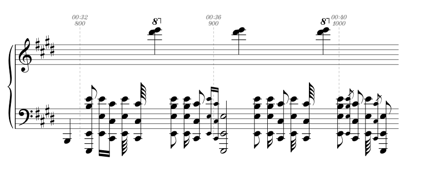
Sonnet 5.5 (high)
The riff an octava higher, in four identical cycles; the left hand plays a low note then two triads, the same each time (easy 2). The clearest easy version.
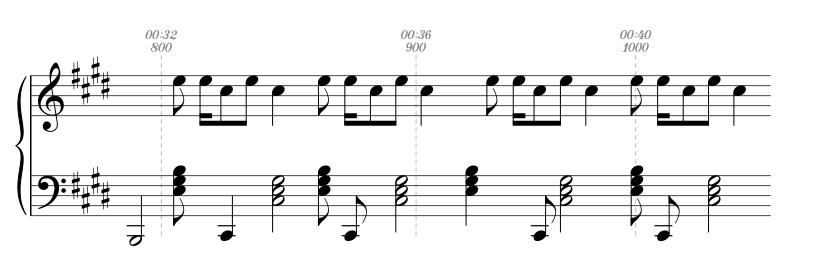
The plan and the declared lines
S1 f783-f812 L=keep R=right easy 2 | intro: the left hand holds a single low B1, which is already simple, so it keeps its notes with a regular rhythm. The right hand has only far-high artifacts, so the riff in the top notes of the left chords starts here as single notes S2 f812-f1042 L=left easy 2 R=right easy 2 | the riff section on E and C#m: the left hand plays a low note then a chord, and the right hand plays the riff (the top line of the left chords) as a single-note melody in corcheas pattern L f783-f812: keep pattern L f812-f1042: left easy 2 pattern R f783-f1042: right easy 2 artifact f863 D#7: a high chord alone, far above the melody artifact f863 E7: a high chord alone, far above the melody artifact f926 D#6: a high chord alone, an octava above the riff artifact f926 E6: a high chord alone, an octava above the riff artifact f990 D#7: a high chord alone, far above the melody artifact f990 E7: a high chord alone, far above the melody
GPT-6 Luna (medium)
The left hand is a steady low note then a dyad (easy 12), but the right hand starts with two semicorcheas and drops to a low G#3 at the end of cycles 2 and 4, which breaks the riff.
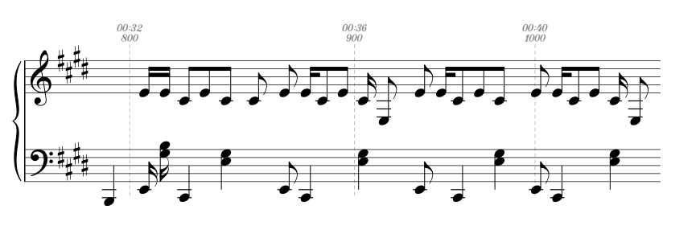
The plan and the declared lines
S1 f783-f812 L=keep R=right easy 1 | Keep the already-simple B1 bass stretch; the sparse, slow right-hand line suits a held single-note melody. S2 f812-f1042 L=left easy 12 R=right easy 1 | Use the repeating low-note-and-dyad pattern for the dense, repeated chord accompaniment; keep the same sparse melody pattern. pattern L f783-f812: keep pattern L f812-f1042: left easy 12 pattern R f783-f1042: right easy 1 artifact f863 D#7: a high chord alone, far above the melody artifact f863 E7: a high chord alone, far above the melody artifact f926 D#6: a high chord alone, far above the melody artifact f926 E6: a high chord alone, far above the melody artifact f990 D#7: a high chord alone, far above the melody artifact f990 E7: a high chord alone, far above the melody
GPT-6.1 Terra (medium)
The riff in single notes with landing blancas; the left hand plays a low note then a dyad in the rhythm it had. The cycles vary a little (an extra B-G# dyad at f925).
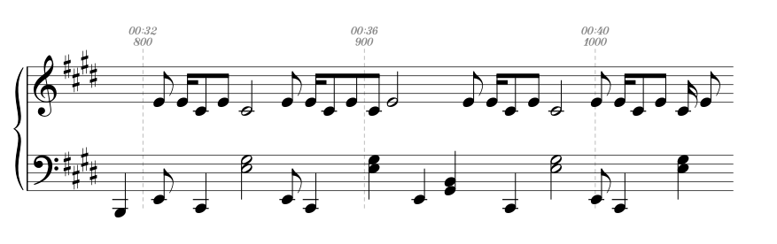
The plan and the declared lines
S1 f783-f812 L=keep R=right easy 2 | Keep the simple B1 passage; use a single-note melody. S2 f812-f1042 L=left easy 12 R=right easy 2 | Simplify the repeated chords to low notes and two-note chords; bring the left-hand riff into the right hand. pattern L f783-f811: keep pattern R f783-f811: right easy 2 pattern L f812-f1042: left easy 12 pattern R f812-f1042: right easy 2 artifact f863 D#7: a high chord alone, far above the riff artifact f863 E7: a high chord alone, far above the riff artifact f926 D#6: a high chord alone, far above the riff artifact f926 E6: a high chord alone, far above the riff artifact f990 D#7: a high chord alone, far above the riff artifact f990 E7: a high chord alone, far above the riff
GPT-6.1 Sol (medium)
The riff is whole and the left hand only holds two triads per cycle (0.06 moves per negra): the easiest to play, but there is no bass after the first note, so it sounds thin.
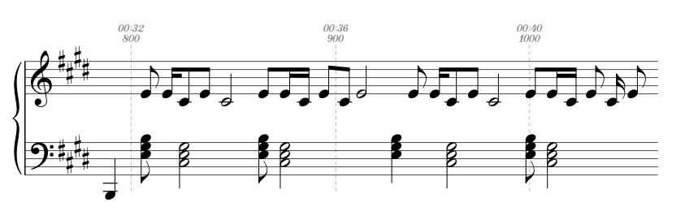
The plan and the declared lines
S1 f783-f813 L=keep R=right easy 1 | Keep the simple B1 bass; omit isolated high artifacts. S2 f813-f1042 L=left easy 1 R=right easy 2 | Simplify the repeated chords to held close triads; move their top-note riff into the right hand. pattern L f783-f811: keep pattern R f783-f811: right easy 1 pattern L f812-f1042: left easy 1 pattern R f812-f1042: right easy 2 artifact f863 D#7: isolated high cluster above the repeating left-hand melody artifact f863 E7: isolated high cluster above the repeating left-hand melody artifact f926 D#6: isolated high cluster unrelated to the repeating left-hand melody artifact f926 E6: isolated high cluster unrelated to the repeating left-hand melody artifact f990 D#7: isolated high cluster above the repeating left-hand melody artifact f990 E7: isolated high cluster above the repeating left-hand melody
99 Red Balloons, f783-f1042: medium
The full prompts: the instructions (system prompt) · the plan request · the first batch (Sonnet's; each model's batch carries its own plan)
The passage now

Sonnet 5.5 (high)
The riff is clean, but the left hand plays on almost every corchea (octavas, chords and offbeats, 1.10 moves per negra, more than the sheet now in places): busier than a medium left hand should be.
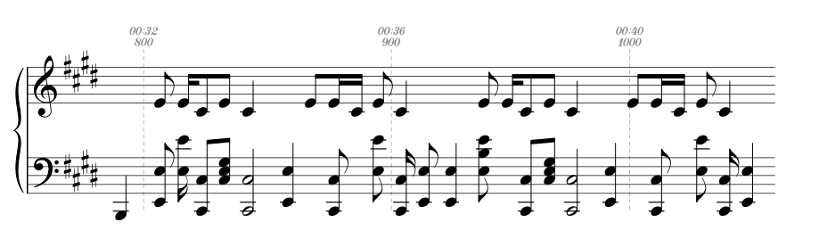
The plan and the declared lines
S1 f783-f812 L=keep R=right medium 14 | intro: the left hand holds a single B1, which is already simple, so its notes stay and only the rhythm is made regular; the right hand has only the high artifacts and plays single melody notes S2 f812-f1042 L=left medium 15 R=right medium 14 | the riff over E and C#m: the left hand plays an octava bass, then two beamed corcheas of the chord, and the top notes of its big chords go to the right hand as single melody notes pattern L f783-f812: keep pattern L f812-f1042: left medium 15 pattern R f783-f1042: right medium 14 artifact f863 D#7: a high chord alone, three octavas above the melody artifact f863 E7: a high chord alone, three octavas above the melody artifact f926 D#6: a high chord alone, far above the riff artifact f926 E6: a high chord alone, far above the riff artifact f990 D#7: a high chord alone, three octavas above the melody artifact f990 E7: a high chord alone, three octavas above the melody not melody f907 E3: the top of the held bass octave, not part of the riff not melody f1031 E3: the top of the held bass octave, not part of the riff
GPT-6 Luna (medium)
The riff is there, but a low G#3 landing in the right hand breaks the line, and the left-hand arpeggio (medium 10) changes shape from cycle to cycle (range 28 in two negras).
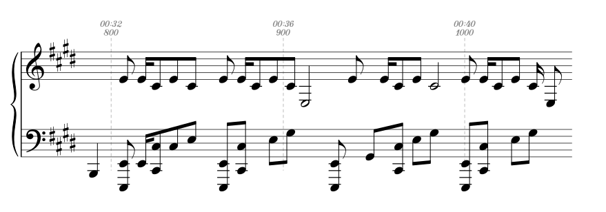
The plan and the declared lines
S1 f783-f812 L=keep R=right medium 1 | Keep the already-simple B1 bass; retain the melody in a fluent single-note line. S2 f812-f1042 L=left medium 10 R=right medium 1 | Use a broken-chord pattern for the active left hand and keep the right hand fluent on the melody. pattern L f783-f812: keep pattern L f812-f1042: left medium 10 pattern R f783-f1042: right medium 1 artifact f863 D#7: a high chord alone, far above the melody artifact f863 E7: a high chord alone, far above the melody artifact f926 D#6: a high chord alone, far above the melody artifact f926 E6: a high chord alone, far above the melody artifact f990 D#7: a high chord alone, far above the melody artifact f990 E7: a high chord alone, far above the melody
GPT-6.1 Terra (medium)
The riff in single notes and four identical cycles of a low note then two beamed triads (medium 2): one pattern, read at first sight. The bass is a single low note, a little thin.
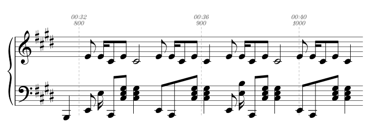
The plan and the declared lines
S1 f783-f812 L=keep R=right medium 1 | Keep the simple B1 bass. S2 f812-f1042 L=left medium 2 R=right medium 1 | Simplify the dense chords; bring the left-hand top-line riff into the right hand. pattern L f783-f811: keep pattern R f783-f811: right medium 1 pattern L f812-f1042: left medium 2 pattern R f812-f1042: right medium 1 artifact f863 D#7: isolated high chord far above the riff artifact f863 E7: isolated high chord far above the riff artifact f926 D#6: isolated high chord far above the riff artifact f926 E6: isolated high chord far above the riff artifact f990 D#7: isolated high chord far above the riff artifact f990 E7: isolated high chord far above the riff
GPT-6.1 Sol (medium)
The riff is whole in the right hand with small landing chords, and the left hand plays an octava then three-note chords on its own onsets (medium 15). Some left-hand semicorcheas keep the hand busier than medium needs.
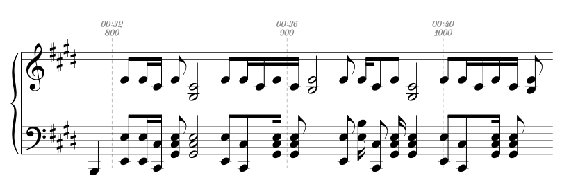
The plan and the declared lines
S1 f783-f813 L=keep R=right medium 1 | Keep the simple B1 bass; remove isolated high artifacts. S2 f813-f1042 L=left medium 15 R=right medium 1 | Octave bass then two chord attacks; bring the repeated left-hand top-note riff into the right hand. pattern L f783-f812: keep pattern R f783-f812: right medium 1 pattern L f813-f1042: left medium 15 pattern R f813-f1042: right medium 1 artifact f863 D#7: isolated high cluster above the repeated left-hand melody artifact f863 E7: isolated high cluster above the repeated left-hand melody artifact f926 D#6: isolated chromatic cluster unrelated to the repeated riff artifact f926 E6: isolated chromatic cluster unrelated to the repeated riff artifact f990 D#7: isolated high cluster above the repeated left-hand melody artifact f990 E7: isolated high cluster above the repeated left-hand melody
GPT-6 Luna (max)
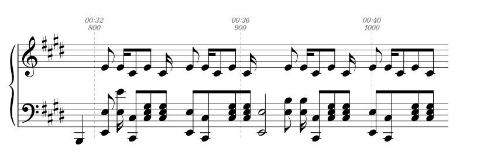
The plan and the declared lines
S1 f783-f812 L=keep R=right medium 1 | Keep the simple B1 bass; use the fluent melody pattern. S2 f812-f1042 L=left medium 15 R=right medium 1 | Reduce the dense left-hand chords to an octave bass and two chord attacks; keep the melody pattern. pattern L f783-f812: keep pattern R f783-f812: right medium 1 pattern L f812-f1042: left medium 15 pattern R f812-f1042: right medium 1 not melody f907 E3: the top of a low accompaniment chord while the riff rests not melody f1031 E3: the top of a low accompaniment chord while the riff rests artifact f863 D#7: a very high chord alone, far above the melody artifact f863 E7: a very high chord alone, far above the melody artifact f926 D#6: a high chord alone, far above the melody artifact f926 E6: a high chord alone, far above the melody artifact f990 D#7: a very high chord alone, far above the melody artifact f990 E7: a very high chord alone, far above the melody
GPT-6.1 Terra (max)
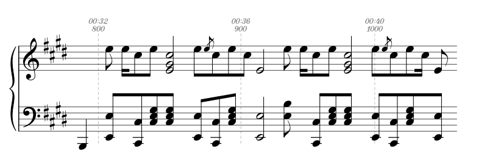
The plan and the declared lines
S1 f783-f812 L=keep R=right medium 14 | keep the simple B1 bass figure S2 f812-f1042 L=left medium 15 R=right medium 14 | simplify the dense chords and bring their top-line riff to R pattern L f783-f812: keep pattern R f783-f812: right medium 14 pattern L f812-f1042: left medium 15 pattern R f812-f1042: right medium 14 artifact f863 D#7: isolated high chord above the riff artifact f863 E7: isolated high chord above the riff artifact f926 D#6: isolated high chord above the riff artifact f926 E6: isolated high chord above the riff artifact f990 D#7: isolated high chord above the riff artifact f990 E7: isolated high chord above the riff
GPT-6.1 Sol (max)
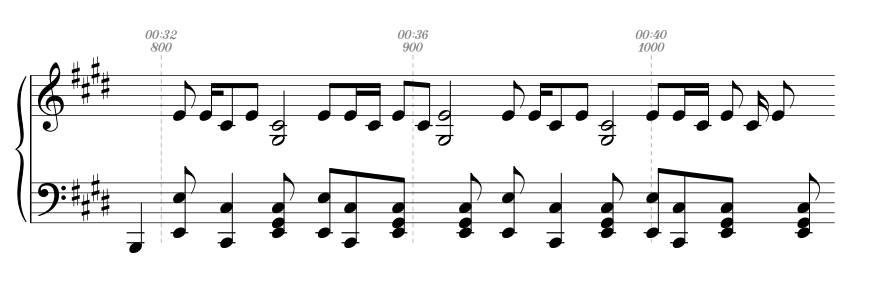
The plan and the declared lines
S1 f783-f812 L=keep R=right medium 1 | B1 pickup: preserve the already-simple bass. S2 f812-f1042 L=left medium 15 R=right medium 1 | Repeated E–C#m riff: retain bass-and-chord rhythm, move the chord-top melody to R, omit isolated high artifacts. pattern L f783-f812: keep pattern R f783-f812: right medium 1 pattern L f812-f1042: left medium 15 pattern R f812-f1042: right medium 1 artifact f863 D#7: isolated high cluster, three octaves above the riff melody artifact f863 E7: isolated high cluster, three octaves above the riff melody artifact f926 D#6: isolated high cluster, far above the riff melody artifact f926 E6: isolated high cluster, far above the riff melody artifact f990 D#7: isolated high cluster, three octaves above the riff melody artifact f990 E7: isolated high cluster, three octaves above the riff melody
99 Red Balloons, f783-f1042: hard-medium
The full prompts: the instructions (system prompt) · the plan request · the first batch (Sonnet's; each model's batch carries its own plan)
The passage now

Sonnet 5.5 (high)
The riff an octava higher with the fifth or the third under each main note (B4-E5, G#4-C#5): the powerful hard right hand the user asked for; the left hand keeps an octava then two beamed triads (medium 15) in every cycle. Two quick notes are drawn as decoration notes (f885, f1009).
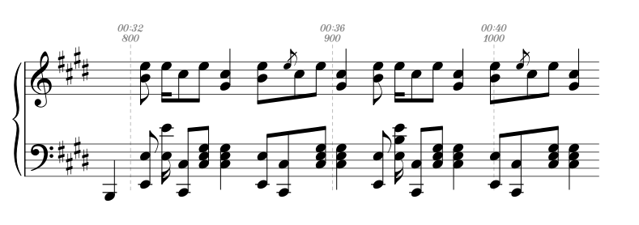
The plan and the declared lines
S1 f783-f812 L=keep R=right hard 1 | intro: the left hand holds a single low B1, so it keeps its note and only the rhythm is made regular; the right hand has only high artifacts here S2 f812-f1042 L=left medium 15 R=right hard 1 | riff over E and C#m: the left hand plays an octava and then two beamed corcheas of the chord, one pattern for the whole section; the riff in the top notes of the left-hand chords moves to the right hand as the melody, with a second chord note under it on the strong beats pattern L f783-f812: keep pattern L f812-f1042: left medium 15 pattern R f783-f1042: right hard 1 artifact f863 D#7: a high chord alone, far above the riff artifact f863 E7: a high chord alone, far above the riff artifact f926 D#6: a high chord alone, above the riff, adds nothing artifact f926 E6: a high chord alone, above the riff, adds nothing artifact f990 D#7: a high chord alone, far above the riff artifact f990 E7: a high chord alone, far above the riff not melody f907 E3: the held bass chord of the left hand, not the riff not melody f1031 E3: the held bass chord of the left hand, not the riff
GPT-6 Luna (medium)
The riff with dyads, over a left hand of an octava then single notes going up (medium 10): light and regular, but the right hand is less powerful than hard asks and decoration notes stay.
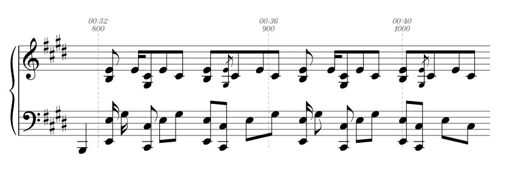
The plan and the declared lines
S1 f783-f812 L=keep R=right hard 1 | B1 is already a simple bass note; keep it and make its rhythm regular S2 f812-f1042 L=left medium 10 R=right hard 1 | The remaining left hand is busy and broken; use a repeated bass-and-arpeggio shape, with the melody in the right hand pattern L f783-f812: keep pattern L f812-f1042: left medium 10 pattern R f783-f1042: right hard 1 artifact f863 D#7: isolated high notes far above the riff melody artifact f863 E7: isolated high notes far above the riff melody artifact f926 D#6: isolated high notes far above the riff melody artifact f926 E6: isolated high notes far above the riff melody artifact f990 D#7: isolated high notes far above the riff melody artifact f990 E7: isolated high notes far above the riff melody
GPT-6.1 Terra (medium)
The riff with dyads on its main notes, and a left hand of an octava, a low C#, then two beamed triads, the same in all four cycles. Two decoration notes stay, as in the recording.
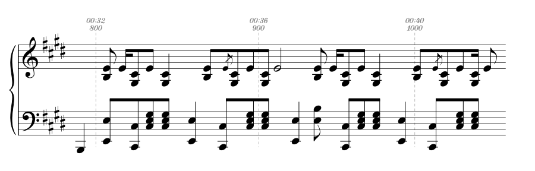
The plan and the declared lines
S1 f783-f812 L=keep R=right hard 1 | Keep the simple B1 bass; use a clear melody line. S2 f812-f1042 L=left medium 15 R=right hard 1 | Simplify the large left-hand chords; bring their repeating top-note riff into the right hand and remove high artifacts. pattern L f783-f811: keep pattern R f783-f811: right hard 1 pattern L f812-f1042: left medium 15 pattern R f812-f1042: right hard 1 artifact f863 D#7: a high chord alone, far above the riff artifact f863 E7: a high chord alone, far above the riff artifact f926 D#6: a high chord alone, far above the riff artifact f926 E6: a high chord alone, far above the riff artifact f990 D#7: a high chord alone, far above the riff artifact f990 E7: a high chord alone, far above the riff
GPT-6.1 Sol (medium)
The riff with low dyads under it and landing chords, but the left hand changes its rhythm from cycle to cycle (semicorchea dyads in cycle 1, a lone negra in cycle 2) and two decoration notes stay.
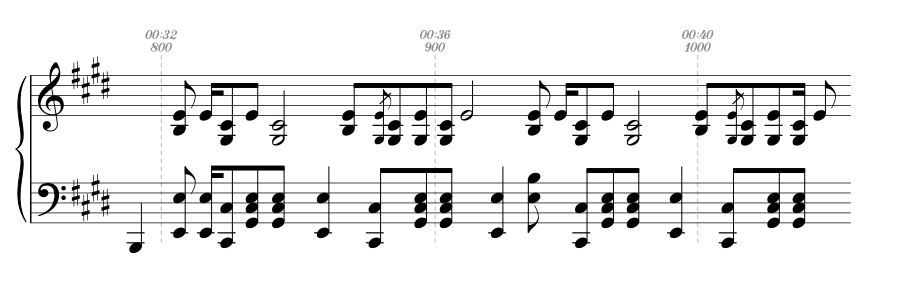
The plan and the declared lines
S1 f783-f812 L=keep R=right hard 1 | Keep the simple B1 bass; omit isolated high artifacts. S2 f812-f1042 L=left medium 15 R=right hard 1 | Simplify the repeated bass-and-chord rhythm; move every note of the left-hand top-line riff to the right hand, with small chord pieces beneath it. pattern L f783-f811: keep pattern R f783-f811: right hard 1 pattern L f812-f1042: left medium 15 pattern R f812-f1042: right hard 1 artifact f863 D#7: isolated high cluster far above the repeating E4-C#4 riff artifact f863 E7: isolated high cluster far above the repeating E4-C#4 riff artifact f926 D#6: isolated high cluster above the riff, not part of its melody artifact f926 E6: isolated high cluster above the riff, not part of its melody artifact f990 D#7: isolated high cluster far above the repeating E4-C#4 riff artifact f990 E7: isolated high cluster far above the repeating E4-C#4 riff
99 Red Balloons, f783-f1042: forced-m15-m1
The full prompts: the instructions (system prompt) · the plan request · the first batch (Sonnet's; each model's batch carries its own plan)
The passage now

Sonnet 5.5 (high)
The riff an octava higher with landing dyads (G#4-C#5, B4-E5) over medium 15; the left hand holds a C# octava in cycle 2 and the last cycle adds a semicorchea.
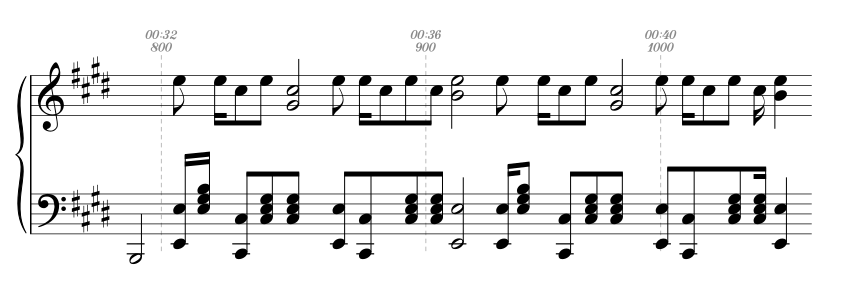
The plan and the declared lines
S1 f783-f812 L=keep R=right medium 1 | intro: the left hand holds a single B1, which is already simple, so it keeps its note in a regular rhythm; the right hand has almost nothing, so it takes the medium pattern with a second note on long notes S2 f812-f1042 L=left medium 15 R=right medium 1 | the C#m and E chords alternate under the riff in the top notes of the left hand; the left hand has bass notes then chords, so it plays the octava and then two beamed corcheas of the chord; the right hand carries the riff, with a second note on long notes only pattern L f783-f812: keep pattern L f812-f1042: left medium 15 pattern R f783-f1042: right medium 1 artifact f863 D#7: a high chord alone, far above the riff artifact f863 E7: a high chord alone, far above the riff artifact f926 D#6: a high chord alone, an octava or more above the riff artifact f926 E6: a high chord alone, an octava or more above the riff artifact f990 D#7: a high chord alone, far above the riff artifact f990 E7: a high chord alone, far above the riff
GPT-6 Luna (medium)
The left hand is exactly medium 15 (an octava, then two beamed triads) in every cycle. The riff is whole but its landing note became a corchea, so the riff loses its long notes.
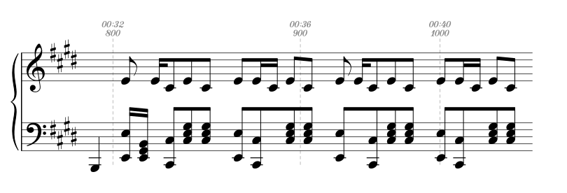
The plan and the declared lines
S1 f783-f813 L=keep R=right medium 1 | Keep the simple B1 bass; the right hand stays fluent. S2 f813-f1042 L=left medium 15 R=right medium 1 | Use the bass-then-two-chords pattern through the changing chords; keep the right-hand pattern consistent. pattern L f783-f812: keep pattern L f812-f1042: left medium 15 pattern R f783-f1042: right medium 1 artifact f863 D#7: a high chord alone, far above the melody artifact f863 E7: a high chord alone, far above the melody artifact f926 D#6: high notes alone, far above the melody artifact f926 E6: high notes alone, far above the melody artifact f990 D#7: a high chord alone, far above the melody artifact f990 E7: a high chord alone, far above the melody
GPT-6.1 Terra (medium)
Four identical cycles: the riff in single notes landing on a negra, and medium 15 exactly (an octava, two beamed triads, a held triad). Reads at first sight.
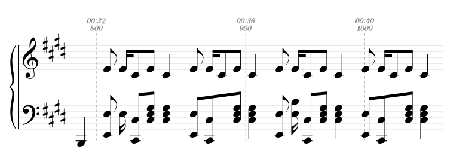
The plan and the declared lines
S1 f783-f812 L=keep R=right medium 1 | Keep the simple B1 passage. S2 f812-f1042 L=left medium 15 R=right medium 1 | Simplify the dense left-hand chords; bring their top-line riff into the right hand where needed. pattern L f783-f811: keep pattern R f783-f811: right medium 1 pattern L f812-f1042: left medium 15 pattern R f812-f1042: right medium 1 artifact f863 D#7: a high chord alone, far above the riff artifact f863 E7: a high chord alone, far above the riff artifact f926 D#6: a high chord alone, above the riff artifact f926 E6: a high chord alone, above the riff artifact f990 D#7: a high chord alone, far above the riff artifact f990 E7: a high chord alone, far above the riff
GPT-6.1 Sol (medium)
The riff with landing dyads, but both hands change rhythm between cycles (semicorchea dyads, a detached corchea triad): medium 15 is there only in part.
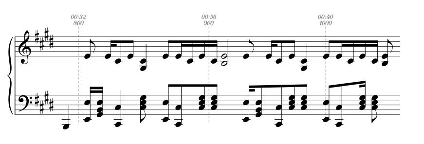
The plan and the declared lines
S1 f783-f813 L=keep R=right medium 1 | Keep the simple B1 bass. S2 f813-f1042 L=left medium 15 R=right medium 1 | Simplify the bass-and-chord riff; move its melodic top notes to the right hand and omit high artifacts. pattern L f783-f812: keep pattern L f813-f1042: left medium 15 pattern R f783-f1042: right medium 1 artifact f863 D#7: isolated high cluster far above the riff; the melody is in the left-hand chord tops artifact f863 E7: isolated high cluster far above the riff; the melody is in the left-hand chord tops artifact f926 D#6: isolated high cluster unrelated to the continuing riff artifact f926 E6: isolated high cluster unrelated to the continuing riff artifact f990 D#7: isolated high cluster far above the riff artifact f990 E7: isolated high cluster far above the riff
99 Red Balloons, f1042-f1414: easy
The full prompts: the instructions (system prompt) · the plan request · the first batch (Sonnet's; each model's batch carries its own plan)
The passage now
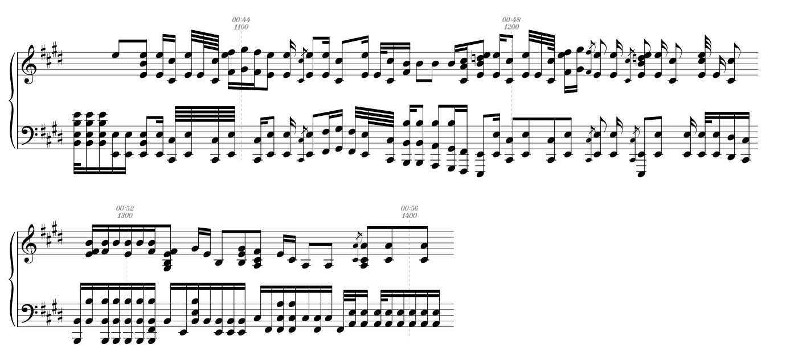
Sonnet 5.5 (high)
The melody in single notes over a low note then a held triad (easy 2): the stillest left hand. One chord at f1130 (A#-C#-E) is not a simple triad.
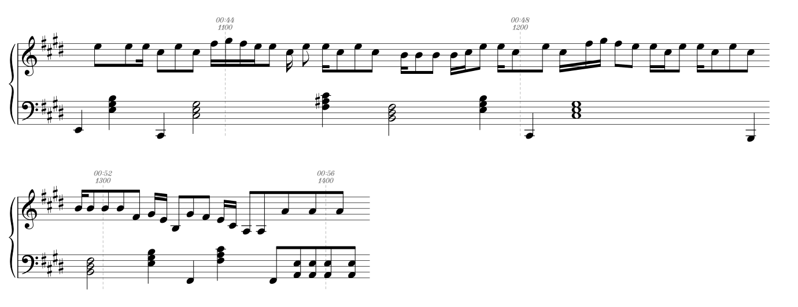
The plan and the declared lines
S1 f1042-f1242 L=left easy 2 R=right easy 2 | the riff in E, C#m, F#7, B: a low bass note then the triad under a single-note melody S2 f1242-f1385 L=left easy 2 R=right easy 2 | the same riff over B, E, F#m, A: same patterns, with the hand sliding to the nearest position at each chord change S3 f1385-f1414 L=keep R=right easy 2 | the ending: the left hand is already simple (a held A2+E3), so it keeps its notes with a regular rhythm pattern L f1042-f1377: left easy 2 pattern R f1042-f1377: right easy 2 not melody f1084 E4: a fill under the held E5, not part of the riff not melody f1148 E4: a fill under the E5, not part of the riff not melody f1210 E4: a fill under the E5, not part of the riff not melody f1273 E4: a fill after the E5, not part of the riff not melody f1297 B4: a repeat of the B4 pulse that the transcription doubled, too close to its neighbours not melody f1305 B4: a repeat of the B4 pulse that the transcription doubled, too close to its neighbours pattern L f1377-f1385: keep pattern L f1385-f1414: keep pattern R f1377-f1414: right easy 2 not melody f1385 A4: the same A4 repeated 4 frames after f1381, merged into one note
GPT-6 Luna (medium)
The check refused the first batch three times, so the user keeps the sheet now from f1042 to f1377: nothing easy there.
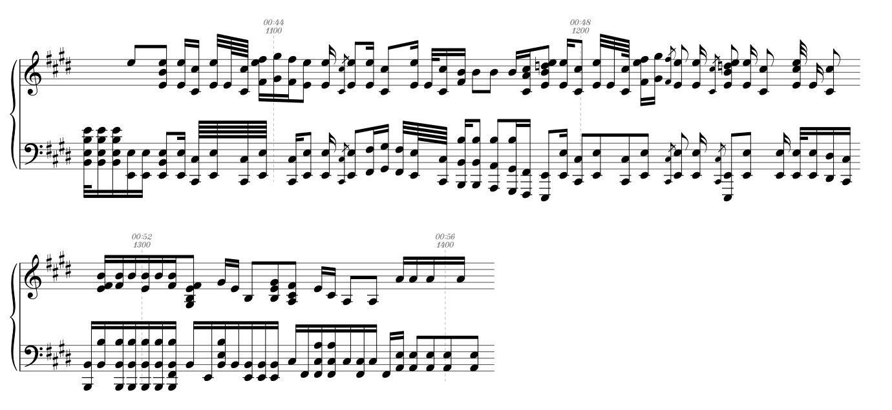
The plan and the declared lines
S1 f1042-f1385 L=left easy 2 R=right easy 2 | Keep the bass-and-chord accompaniment shape through these changing harmonies, with the melody in single notes. S2 f1385-f1414 L=keep R=right easy 2 | The left-hand part is marked simple here, so retain it; keep the right-hand melody in single notes. pattern L f1042-f1377: left easy 2 pattern R f1042-f1377: right easy 2 not melody f1084 E4: a fill between melody notes not melody f1148 E4: a fill between melody notes not melody f1210 E4: a fill between melody notes not melody f1273 E4: a fill between melody notes pattern L f1377-f1385: keep pattern L f1385-f1414: keep pattern R f1377-f1414: right easy 2
GPT-6.1 Terra (medium)
The melody in single notes over a low note, then dyads in negras (easy 12), regular through the passage; one A# dyad at f1130.
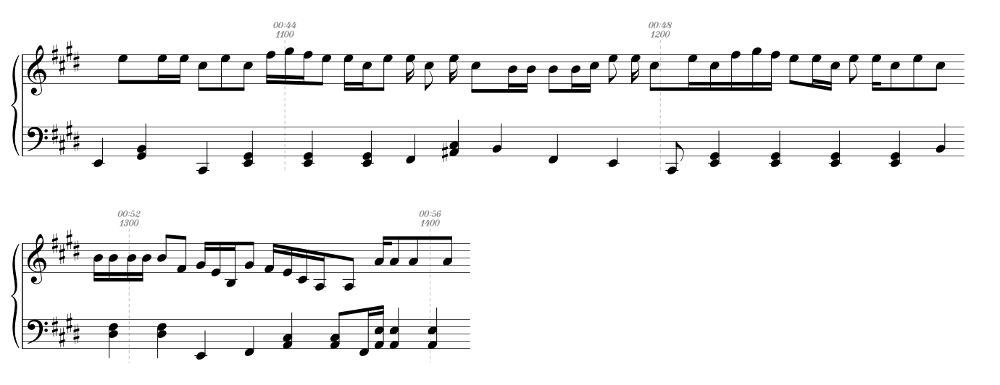
The plan and the declared lines
S1 f1042-f1385 L=left easy 12 R=right easy 2 | repeated compact chords under the single-note melody S2 f1385-f1410 L=keep R=right easy 2 | keep the simple A2-E3 accompaniment S3 f1410-f1414 L=left easy 12 R=right easy 2 | continue the preceding patterns pattern L f1042-f1377: left easy 12 pattern R f1042-f1377: right easy 2 not melody f1084 E4: lower octave duplicate of the preceding melody note not melody f1148 E4: lower octave duplicate of the preceding melody note not melody f1210 E4: lower octave duplicate of the preceding melody note not melody f1273 E4: lower octave duplicate of the preceding melody note not melody f1297 B4: closely repeated duplicate of B4 pattern L f1377-f1384: keep pattern R f1377-f1384: right easy 2 pattern L f1385-f1409: keep pattern R f1385-f1409: right easy 2 pattern L f1410-f1414: keep pattern R f1410-f1414: right easy 2
GPT-6.1 Sol (medium)
The same plan as a low note then dyads, but the left hand adds corcheas around f1180 and the right hand starts with uneven semicorcheas.
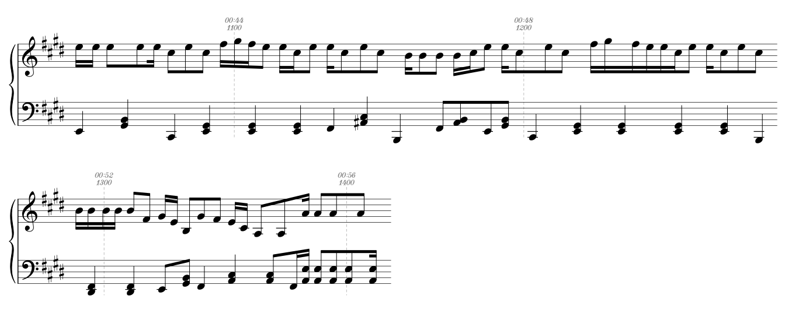
The plan and the declared lines
S1 f1042-f1385 L=left easy 12 R=right easy 2 | Repeated riff: bass then steady two-note chords; preserve the melody as single notes. S2 f1385-f1414 L=keep R=right easy 2 | Closing passage: keep the simple A2–E3 accompaniment under the single-note melody. pattern L f1042-f1377: left easy 12 pattern R f1042-f1377: right easy 2 not melody f1045 E4: rapid repeated attack of the opening riff, merged with the preceding E not melody f1084 E4: lower octave echo of the preceding E5, not a separate melody note not melody f1148 E4: lower octave echo between the melody notes E5 and C#5 not melody f1210 E4: lower octave echo of the preceding E5 not melody f1273 E4: lower octave echo under the held melody E5 not melody f1297 B4: rapid repeated B4 merged with the preceding B4 for the easy rhythm pattern L f1377-f1385: keep pattern L f1385-f1414: keep pattern R f1377-f1414: right easy 2
99 Red Balloons, f1042-f1414: medium
The full prompts: the instructions (system prompt) · the plan request · the first batch (Sonnet's; each model's batch carries its own plan)
The passage now

Sonnet 5.5 (high)
The melody in single notes and a left hand that keeps a low note then two triads almost all through; accepted at the first reply. One short chromatic stretch at f1150.
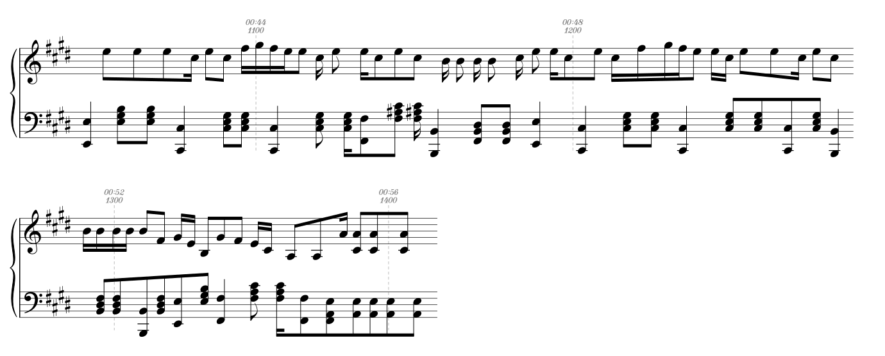
The plan and the declared lines
S1 f1042-f1242 L=left medium 15 R=right medium 1 | the first stretch (E, C#m, F#7, B): the left hand plays an octava and then two beamed chords on each chord, and the right hand plays the melody with a second note on the long notes S2 f1242-f1385 L=left medium 15 R=right medium 1 | the same pattern through B, E, F#m and A, as when the song first came, so the pianist keeps one shape S3 f1385-f1414 L=keep R=right medium 1 | the end: the left hand only holds A2+E3, which is already simple, so it keeps its notes in a regular rhythm pattern L f1042-f1377: left medium 15 pattern R f1042-f1377: right medium 1 not melody f1084 E4: the lower E4 of the octave pair, 3 frames after the E5 (a fill) not melody f1148 E4: the lower E4 of the octave pair, 3 frames after the E5 (a fill) not melody f1210 E4: the lower E4 of the octave pair, 3 frames after the E5 (a fill) not melody f1273 E4: the lower E4 of the octave pair, 3 frames after the E5 (a fill) not melody f1297 B4: a repeated B4 three frames after the last one, merged into one note pattern L f1377-f1414: keep pattern R f1377-f1414: right medium 1
GPT-6 Luna (medium)
The check refused the first batch (f1042-f1377) three times (missing melody notes, uneven pairs, notes off the grid), so in the app the user keeps the sheet now there: the hardest version.
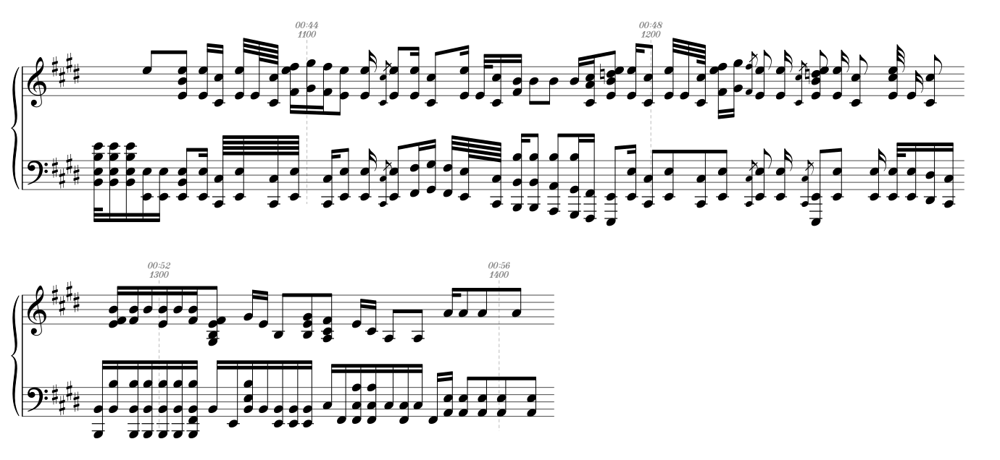
The plan and the declared lines
S1 f1042-f1242 L=left medium 10 R=right medium 1 | The active left-hand part is simplified to a repeating broken-chord pattern; keep the melody fluent with extra notes only on longer notes. S2 f1242-f1385 L=left medium 10 R=right medium 1 | Continue the same accompaniment and melody patterns through the next stretch. S3 f1385-f1414 L=keep R=right medium 1 | Keep the simple left-hand stretch as written. pattern L f1042-f1242: left medium 10 pattern L f1242-f1377: left medium 10 pattern R f1042-f1242: right medium 1 pattern R f1242-f1377: right medium 1 not melody f1117 E5: a repeated fill between melody notes not melody f1202 C#5: a repeated note doubled by the transcription not melody f1210 E4: a fill between two notes of the melody not melody f1226 G#5: a fill between two notes of the melody not melody f1273 E4: a repeated fill between melody notes not melody f1297 B4: a repeated note doubled by the transcription pattern L f1377-f1385: keep pattern L f1385-f1414: keep pattern R f1377-f1414: right medium 1
GPT-6.1 Terra (medium)
The melody kept, and the steadiest left hand (0.36 moves per negra): a low note or octava, then triads on the beat; a few chords with accidentals around f1170.
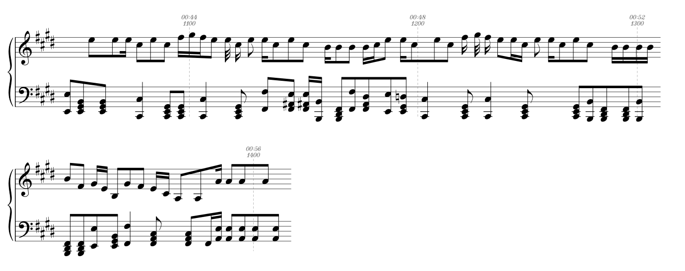
The plan and the declared lines
S1 f1042-f1385 L=left medium 15 R=right medium 1 | Octave bass and repeated chords simplify the dense accompaniment; keep the melody fluent. S2 f1385-f1414 L=keep R=right medium 1 | Keep the simple A2–E3 fifth; continue the right-hand pattern. pattern L f1042-f1377: left medium 15 pattern R f1042-f1377: right medium 1 not melody f1084 E4: lower duplicate after the octave melody note not melody f1148 E4: lower duplicate after the octave melody note not melody f1210 E4: lower duplicate after the octave melody note not melody f1273 E4: lower duplicate after the octave melody note not melody f1297 B4: repeated transcription onset merged with the preceding B4 pattern L f1377-f1384: keep pattern L f1385-f1414: keep pattern R f1377-f1384: right medium 1 pattern R f1385-f1414: right medium 1
GPT-6.1 Sol (medium)
A clear single-note melody over a low note then two beamed triads, but around f1130-f1180 the left hand plays a mixed stretch (A#-C#-E dyads, a D natural, notes spread) that breaks the pattern.
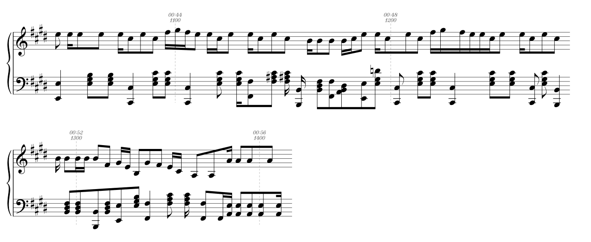
The plan and the declared lines
S1 f1042-f1385 L=left medium 15 R=right medium 1 | Repeated driving passage: octave bass then two chord corcheas; melody alone on short notes, a second note on long ones. S2 f1385-f1414 L=keep R=right medium 1 | Closing passage: retain the simple A2–E3 fifth and continue the same melody treatment. pattern L f1042-f1377: left medium 15 pattern R f1042-f1377: right medium 1 not melody f1045 E4: a rapid repetition of the accompaniment chord between the retained riff notes not melody f1084 E4: a lower accompaniment fill between melody notes not melody f1148 E4: a lower accompaniment fill under the held E5 not melody f1210 E4: a lower accompaniment fill between melody notes not melody f1273 E4: a lower accompaniment fill under the held E5 not melody f1297 B4: a rapid repeated B4 merged with the preceding B4 for a steady rhythm pattern L f1377-f1414: keep pattern R f1377-f1414: right medium 1
99 Red Balloons, f1042-f1414: hard-medium
The full prompts: the instructions (system prompt) · the plan request · the first batch (Sonnet's; each model's batch carries its own plan)
The passage now

Sonnet 5.5 (high)
The melody with dyads on its main notes and a left hand that keeps a low note then two triads through most of the passage; a few decoration notes stay.
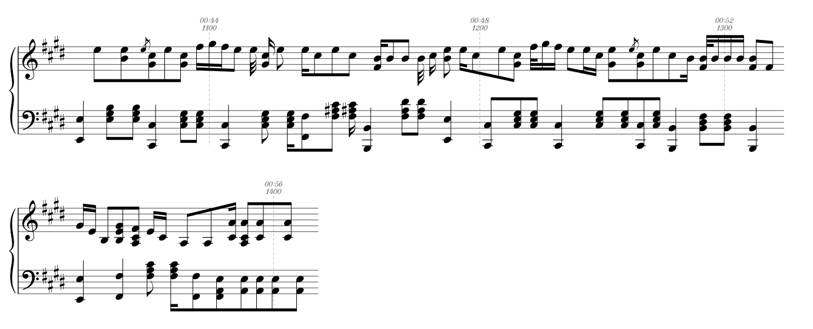
The plan and the declared lines
S1 f1042-f1242 L=left medium 15 R=right hard 1 | first part, chords E C#m F#7 B: octava bass, then two beamed chords under the melody with small chord pieces S2 f1242-f1385 L=left medium 15 R=right hard 1 | same sound and same patterns, chords B E F#m A: the left hand keeps one pattern and only follows the chords S3 f1385-f1414 L=keep R=right hard 1 | the end: the left hand is already simple (a held A2+E3), so it keeps its notes with a regular rhythm; the right hand continues the melody pattern L f1042-f1242: left medium 15 pattern L f1242-f1377: left medium 15 pattern R f1042-f1242: right hard 1 pattern R f1242-f1377: right hard 1 not melody f1084 E4: the same E as the E5 at f1081, doubled an octava lower by the transcription not melody f1148 E4: the same E as the E5 at f1145, a repeat doubled by the transcription not melody f1210 E4: the same E as the E5 at f1207, a repeat doubled by the transcription not melody f1273 E4: a repeat of the E under the E5 at f1270, doubled by the transcription pattern L f1377-f1414: keep pattern R f1377-f1414: right hard 1
GPT-6 Luna (medium)
A clean melody with dyads now and then, accepted at the first reply in both batches; the left hand keeps its pattern in the first line, then changes to single bass notes in the second.
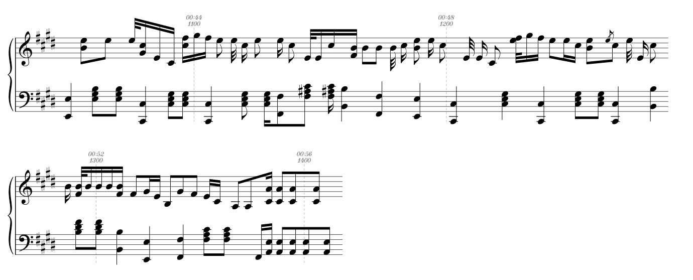
The plan and the declared lines
S1 f1042-f1242 L=left medium 15 R=right hard 1 | Busy chordal passage: use a steady bass-octave then two-chord pattern, with the melody supported by small chord pieces. S2 f1242-f1385 L=left medium 15 R=right hard 1 | Continue the same accompaniment and right-hand approach through the chord changes. S3 f1385-f1414 L=keep R=right hard 1 | Keep the simple held left-hand stretch; retain the same right-hand approach. pattern L f1042-f1242: left medium 15 pattern L f1242-f1377: left medium 15 pattern R f1042-f1242: right hard 1 pattern R f1242-f1377: right hard 1 not melody f1084 E4: a fill between two notes of the melody pattern L f1377-f1414: keep pattern R f1377-f1414: right hard 1
GPT-6.1 Terra (medium)
The melody with a few dyads over a low note then two triads, but the left hand loses its pattern around f1150-f1190 and in the second line, and decoration notes stay.
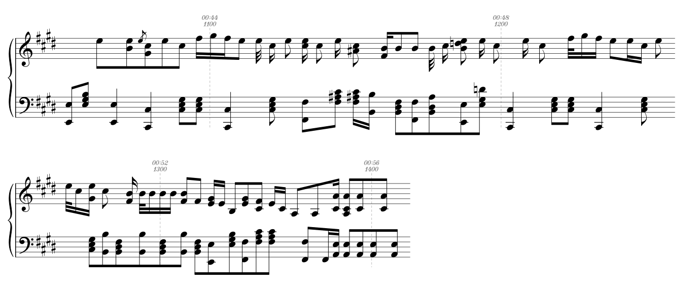
The plan and the declared lines
S1 f1042-f1385 L=left medium 15 R=right hard 1 | consistent octave-and-chord accompaniment and melody with small chord pieces; check the left-hand onsets in the batches S2 f1385-f1410 L=keep R=right hard 1 | retain the simple A2-E3 fifth S3 f1410-f1414 L=left medium 15 R=right hard 1 | resume the preceding patterns; no source detail is provided for these frames pattern L f1042-f1377: left medium 15 pattern R f1042-f1377: right hard 1 not melody f1084 E4: a low doubled note after E5 not melody f1148 E4: a low doubled note after E5 not melody f1210 E4: a low doubled note after E5 not melody f1273 E4: a low doubled note after E5 pattern L f1377-f1384: keep pattern R f1377-f1384: right hard 1 pattern L f1385-f1409: keep pattern R f1385-f1409: right hard 1 pattern L f1410-f1414: keep pattern R f1410-f1414: right hard 1
GPT-6.1 Sol (medium)
A steady left hand (a low note, two triads), but the right hand puts a chord under almost every note (7.2 notes per second): heavier than a melody with small pieces of chords.
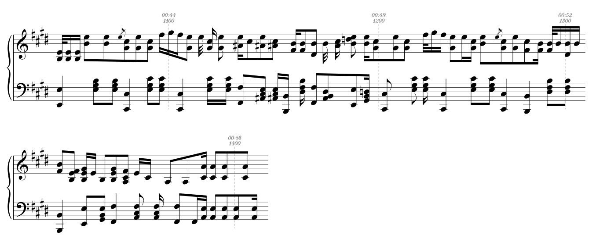
The plan and the declared lines
S1 f1042-f1385 L=left medium 15 R=right hard 1 | Repeated riff: bass octava then two chord corcheas; clear melody with small chord pieces. S2 f1385-f1414 L=keep R=right hard 1 | Closing held fifth A2–E3; retain the simple companion beneath the melody. pattern L f1042-f1377: left medium 15 pattern R f1042-f1377: right hard 1 not melody f1084 E4: a lower-octave fill after the melody E5 not melody f1148 E4: a lower-octave echo between melody notes not melody f1210 E4: a lower-octave fill after the melody E5 not melody f1273 E4: a lower-octave echo of the preceding melody E5 pattern L f1377-f1385: keep pattern L f1385-f1414: keep pattern R f1377-f1414: right hard 1
99 Red Balloons, f1042-f1414: forced-e2-e2
The full prompts: the instructions (system prompt) · the plan request · the first batch (Sonnet's; each model's batch carries its own plan)
The passage now

Sonnet 5.5 (high)
The melody in single notes over a low note then a held triad (easy 2) through most of the passage; only a short corchea stretch near f1150.
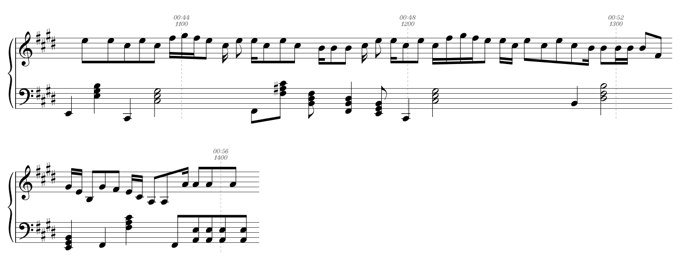
The plan and the declared lines
S1 f1042-f1242 L=left easy 2 R=right easy 2 | the intro riff: the melody is the top line of the right hand in single notes, and the left hand plays a low bass note and then a close triad on each chord (E, C#m, F#7, B, B7, E7, C#m) S2 f1242-f1385 L=left easy 2 R=right easy 2 | the second stretch (B, E, F#m, A): same patterns, one low note then the triad, changing only when the harmony changes S3 f1385-f1414 L=keep R=right easy 2 | the end: the left hand holds the simple fifth A2+E3, so it keeps its notes in a regular rhythm; the right hand continues with single notes pattern L f1042-f1377: left easy 2 pattern R f1042-f1377: right easy 2 not melody f1070 E5: a repeated E5 right before the C#5, merged into the E5 before it not melody f1084 E4: the lower note of the octave left sounding under the melody, a fill not melody f1117 E5: a repeated E5 right before the C#5, merged into the E5 before it not melody f1148 E4: the lower note of the octave left sounding under the melody, a fill not melody f1179 B4: a repeated B4 right before the C#5, merged into the B4 before it not melody f1210 E4: the lower note of the octave left sounding under the melody, a fill not melody f1259 E5: a repeated E5 right before the C#5, merged into the E5 before it not melody f1273 E4: a quick fill note right after the E5 of the melody not melody f1297 B4: a repeated B4 in a run of B4, merged into the one before it pattern L f1377-f1385: keep pattern L f1385-f1414: keep pattern R f1377-f1414: right easy 2
GPT-6 Luna (medium)
The stillest left hand (a low note, then a held triad, 0.16 moves per negra), but the right hand moves the melody an octava lower after the first note, so its line changes register.
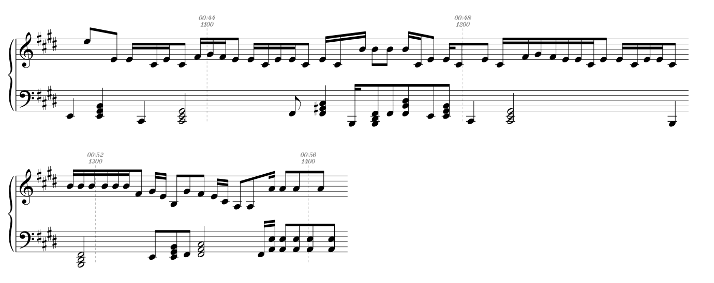
The plan and the declared lines
S1 f1042-f1385 L=left easy 2 R=right easy 2 | Keep the left hand to a low note followed by its chord; play the melody in single notes. S2 f1385-f1414 L=keep R=right easy 2 | The left-hand stretch is marked simple, so keep its notes and regularize only its rhythm; continue the melody in single notes. pattern L f1042-f1377: left easy 2 pattern R f1042-f1377: right easy 2 not melody f1084 E4: a fill between two notes of the melody not melody f1148 E4: a fill between two notes of the melody not melody f1210 E4: a fill between two notes of the melody pattern L f1377-f1385: keep pattern L f1385-f1414: keep pattern R f1377-f1414: right easy 2
GPT-6.1 Terra (medium)
A low note then a chord on most beats, but more onsets than easy 2 needs and a corchea stretch at f1170-f1200.
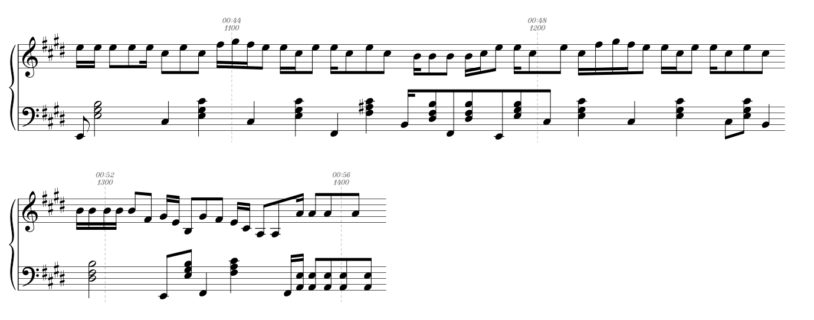
The plan and the declared lines
S1 f1042-f1385 L=left easy 2 R=right easy 2 | Low note and chord under a single-note melody. S2 f1385-f1410 L=keep R=right easy 2 | Keep the simple A2–E3 left-hand figure. S3 f1410-f1414 L=left easy 2 R=right easy 2 | Continue the established patterns to the end. pattern L f1042-f1377: left easy 2 pattern R f1042-f1377: right easy 2 not melody f1045 E4: rapid repeated chord tone merged with the preceding note not melody f1084 E4: lower octave duplicate of the preceding E5 not melody f1148 E4: lower octave duplicate of the preceding E5 not melody f1210 E4: lower octave duplicate of the preceding E5 not melody f1273 E4: lower octave duplicate of the preceding E5 not melody f1297 B4: rapid repeated chord tone merged with the preceding note pattern L f1377-f1384: keep pattern L f1385-f1409: keep pattern L f1410-f1414: keep pattern R f1377-f1384: right easy 2 pattern R f1385-f1409: right easy 2 pattern R f1410-f1414: right easy 2
GPT-6.1 Sol (medium)
The melody in single notes; the left hand starts as easy 2 (a low note, then a triad) but turns into beamed corcheas of chords around f1150-f1200, which easy 2 does not have.
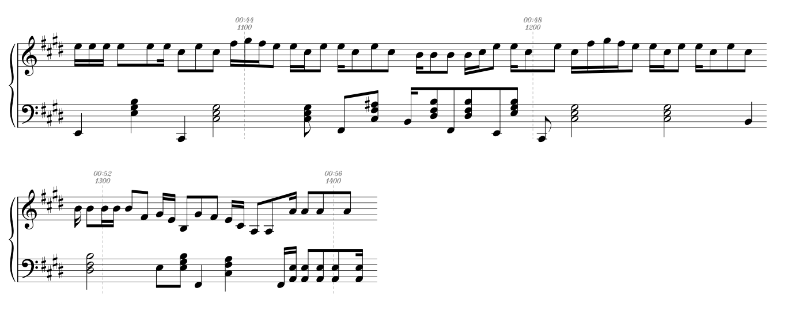
The plan and the declared lines
S1 f1042-f1385 L=left easy 2 R=right easy 2 | Repeated riff: bass then a close triad, with the melody in single notes. S2 f1385-f1414 L=keep R=right easy 2 | Simple ending: retain the A2–E3 fifth and keep the melody clear. pattern L f1042-f1377: left easy 2 pattern R f1042-f1377: right easy 2 not melody f1084 E4: lower-octave accompaniment echo beneath the held E5 not melody f1148 E4: lower-octave accompaniment echo beneath the held E5 not melody f1210 E4: lower-octave accompaniment echo beneath the held E5 not melody f1273 E4: lower-octave accompaniment echo beneath the held E5 not melody f1297 B4: redundant accompaniment-chord repetition beneath the sustained B4 melody pattern L f1377-f1385: keep pattern L f1385-f1414: keep pattern R f1377-f1414: right easy 2
7 Years, f4252-f4872: easy
The full prompts: the instructions (system prompt) · the plan request · the first batch (Sonnet's; each model's batch carries its own plan)
The passage now
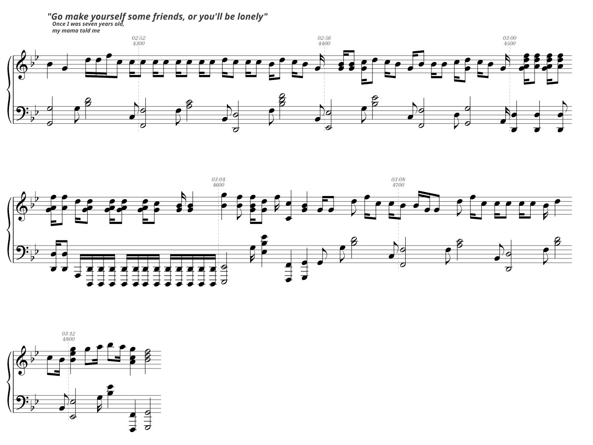
Sonnet 5.5 (high)
The melody kept, but the left hand holds a redonda far below the staff at f4560 and then jumps up to the chords, which is the kind of jump easy should avoid.
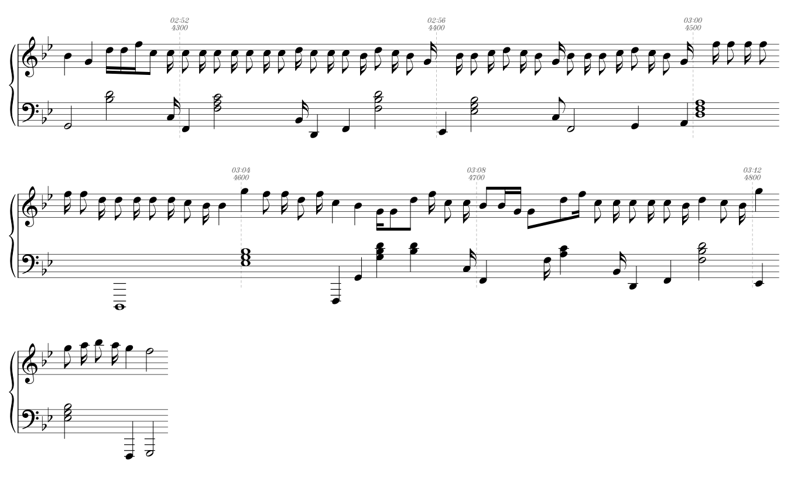
The plan and the declared lines
S1 f4252-f4510 L=left easy 2 R=right easy 2 | first stretch: the left hand plays a low note and then a chord, so a low note followed by one triad fits. The right hand is a single-note melody. S2 f4510-f4664 L=left easy 1 R=right easy 2 | the busiest part, with fast notes and a very low, wide left hand. The left hand holds one triad per chord and does not jump. The right hand is a melody in single notes. S3 f4664-f4872 L=left easy 2 R=right easy 2 | sounds like f4281-f4453, so it gets the patterns of the first stretch, through to the end of the song. pattern L f4252-f4277: keep pattern L f4277-f4289: keep pattern L f4289-f4302: keep pattern L f4302-f4339: left easy 2 pattern L f4339-f4352: keep pattern L f4352-f4364: keep pattern L f4364-f4439: left easy 2 pattern L f4439-f4452: keep pattern L f4452-f4477: keep pattern L f4477-f4489: keep pattern L f4489-f4502: keep pattern L f4502-f4552: left easy 1 pattern L f4552-f4602: keep pattern L f4602-f4639: left easy 1 pattern L f4639-f4652: keep pattern L f4652-f4677: left easy 2 pattern L f4677-f4689: keep pattern L f4689-f4702: keep pattern L f4702-f4714: keep pattern L f4714-f4727: keep pattern L f4727-f4739: keep pattern L f4739-f4752: keep pattern L f4752-f4764: keep pattern L f4764-f4839: left easy 2 pattern L f4839-f4852: keep pattern L f4852-f4872: keep pattern R f4252-f4872: right easy 2
GPT-6 Luna (medium)
The melody kept; the left hand keeps its pattern now all through (pattern keep: a low note, a short note, a chord) in a regular rhythm, as the rule for a simple left hand asks.
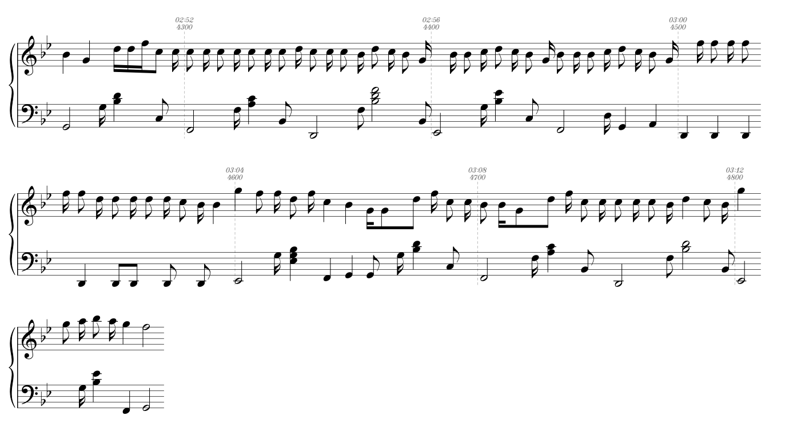
The plan and the declared lines
S1 f4252-f4872 L=keep R=right easy 2 | Keep the simple left-hand stretches; use single-note melody throughout, including the faster middle passage and its returning phrase. pattern L f4252-f4872: keep pattern R f4252-f4872: right easy 2
GPT-6.1 Terra (medium)
The melody is kept in single notes; the left hand keeps a low note then a chord, but at f4560-f4600 it drops to four very low notes in negras, a long reach down for an easy hand.
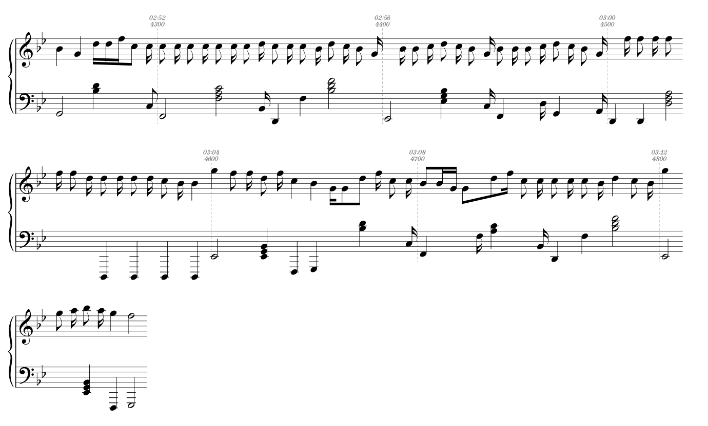
The plan and the declared lines
S1 f4252-f4302 L=keep R=right easy 2 | simple left-hand notes S2 f4302-f4339 L=left easy 2 R=right easy 2 | low note, then chord S3 f4339-f4364 L=keep R=right easy 2 | simple left-hand notes S4 f4364-f4439 L=left easy 2 R=right easy 2 | return to low note, then chord S5 f4439-f4510 L=keep R=right easy 2 | simple left-hand notes S6 f4510-f4552 L=left easy 2 R=right easy 2 | simplify the wider accompaniment S7 f4552-f4602 L=keep R=right easy 2 | simple repeated left-hand notes S8 f4602-f4639 L=left easy 2 R=right easy 2 | low note, then chord S9 f4639-f4764 L=keep R=right easy 2 | simple left-hand notes, including the returning passage S10 f4764-f4839 L=left easy 2 R=right easy 2 | return to low note, then chord S11 f4839-f4853 L=keep R=right easy 2 | simple left-hand notes S12 f4853-f4872 L=left easy 2 R=right easy 2 | continue the pattern provisionally; no notes summarized pattern L f4252-f4301: keep pattern L f4302-f4338: left easy 2 pattern L f4339-f4363: keep pattern L f4364-f4438: left easy 2 pattern L f4439-f4509: keep pattern L f4510-f4551: left easy 2 pattern L f4552-f4601: keep pattern L f4602-f4638: left easy 2 pattern L f4639-f4763: keep pattern L f4764-f4838: left easy 2 pattern L f4839-f4872: keep pattern R f4252-f4872: right easy 2
GPT-6.1 Sol (medium)
The melody in single notes, and the left hand of the sheet now kept and made regular (a low note, then a dyad or triad), with blancas where the hand rests.
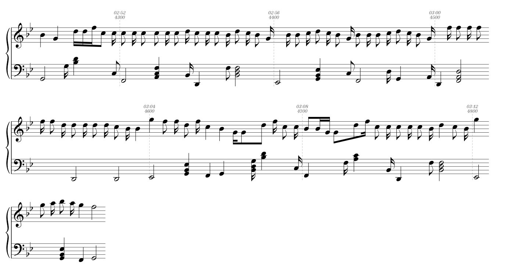
The plan and the declared lines
S1 f4252-f4872 L=left easy 2 R=right easy 2 | Closing section and repeated passage: simplify bass-to-chord gestures to one low note then a held close-position triad; use keep on every explicitly listed L-simple span. Keep the melody in single notes, removing octave doublings and accompaniment. pattern L f4252-f4277: keep pattern L f4277-f4289: keep pattern L f4289-f4302: keep pattern L f4302-f4339: left easy 2 pattern L f4339-f4352: keep pattern L f4352-f4364: keep pattern L f4364-f4402: left easy 2 pattern L f4402-f4439: left easy 2 pattern L f4439-f4452: keep pattern L f4452-f4477: keep pattern L f4477-f4489: keep pattern L f4489-f4502: keep pattern L f4502-f4552: left easy 2 pattern L f4552-f4602: keep pattern L f4602-f4639: left easy 2 pattern L f4639-f4652: keep pattern L f4652-f4677: left easy 2 pattern L f4677-f4689: keep pattern L f4689-f4702: keep pattern L f4702-f4714: keep pattern L f4714-f4727: keep pattern L f4727-f4739: keep pattern L f4739-f4752: keep pattern L f4752-f4764: keep pattern L f4764-f4802: left easy 2 pattern L f4802-f4839: left easy 2 pattern L f4839-f4852: keep pattern L f4852-f4872: keep pattern R f4252-f4872: right easy 2 not melody f4322 C5: repeated accompaniment pulse between retained melody notes
7 Years, f4252-f4872: medium
The full prompts: the instructions (system prompt) · the plan request · the first batch (Sonnet's; each model's batch carries its own plan)
The passage now

Sonnet 5.5 (high)
The same solution: the low octava run in negras, the rest of the left hand as now, accepted at the first reply; a few more dyads in the right hand.
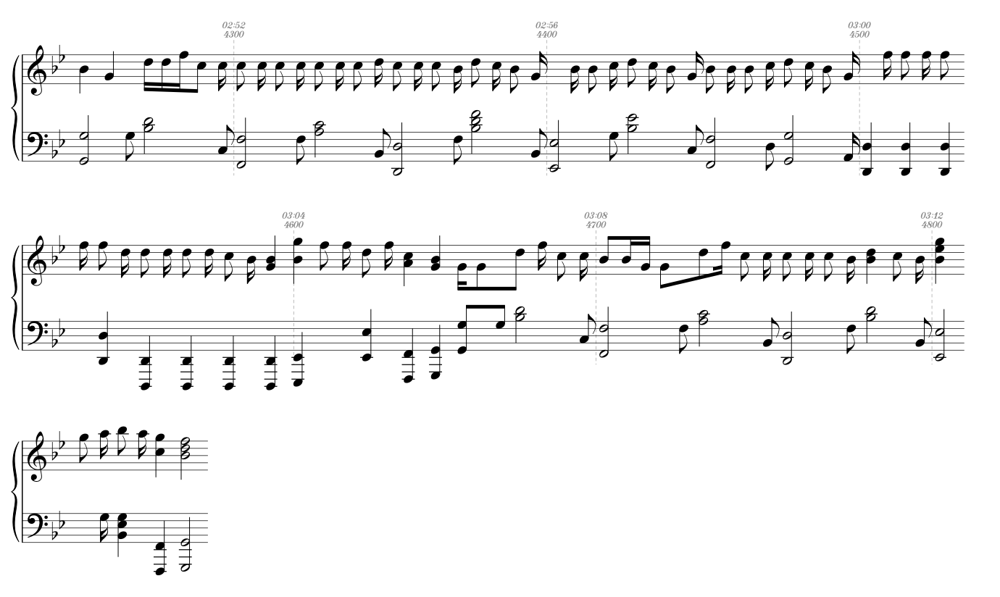
The plan and the declared lines
S1 f4252-f4510 L=left medium 15 R=right medium 14 | verse: the left hand plays an octava (G2+G3, F2, D2+D3) and then chord notes (Bb3+D4), so the octava followed by two beamed chord corcheas is nearest. The right hand plays the melody in single notes, with a chord of the harmony on the long notes at the end of a phrase. S2 f4510-f4664 L=left medium 7 R=right medium 1 | chorus: a busier passage, with the right hand at 8.4 notes/s and the left hand holding octavas in the bass (D1+D2, F1+F2, G1+G2) that change with the chord. Octavas in negras that slide give the strong bass. The right hand keeps single notes on the fast figures and adds a second note only on the long ones. S3 f4664-f4872 L=left medium 15 R=right medium 14 | the verse comes again (it sounds like f4281-f4453) and gets the patterns of S1, so the passage is written the same way. The song ends on the same octava bass. pattern L f4252-f4302: keep pattern L f4302-f4339: left medium 15 pattern L f4339-f4364: keep pattern L f4364-f4439: left medium 15 pattern L f4439-f4502: keep pattern L f4502-f4552: left medium 7 pattern L f4552-f4602: keep pattern L f4602-f4639: left medium 7 pattern L f4639-f4652: keep pattern L f4652-f4677: left medium 15 pattern L f4677-f4764: keep pattern L f4764-f4839: left medium 15 pattern L f4839-f4872: keep pattern R f4252-f4510: right medium 14 pattern R f4510-f4664: right medium 1 pattern R f4664-f4872: right medium 14
GPT-6 Luna (medium)
The melody is kept, but the fast run of low octavas stays almost as now (semicorcheas, f4520-f4590), and the first line adds notes to a left hand that was already simple.
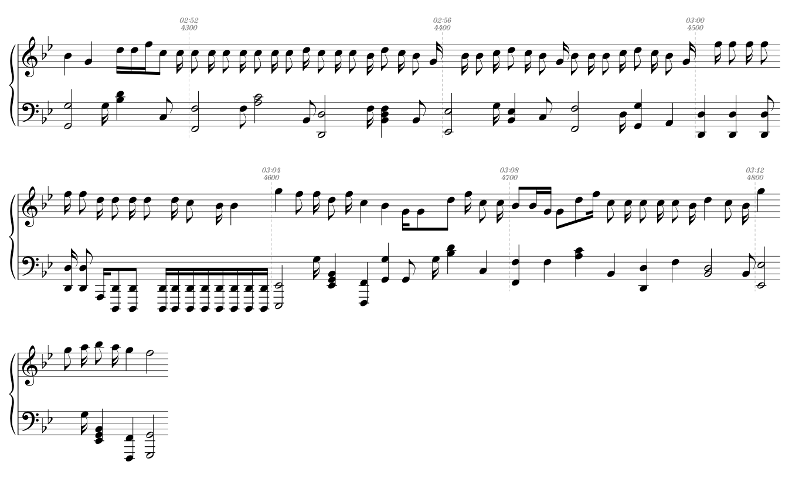
The plan and the declared lines
S1 f4252-f4872 L=keep R=right medium 1 | Keep the marked-simple left-hand notes and rhythm regular; use a fluent melody with a second note only on longer notes throughout. pattern L f4252-f4872: keep pattern R f4252-f4872: right medium 1
GPT-6.1 Terra (medium)
The left hand of the sheet now is kept where it is simple, and the fast run of low octavas (f4520-f4590) becomes four octavas in negras: the one hard stretch is solved. Small dyads end the phrases in the right hand.
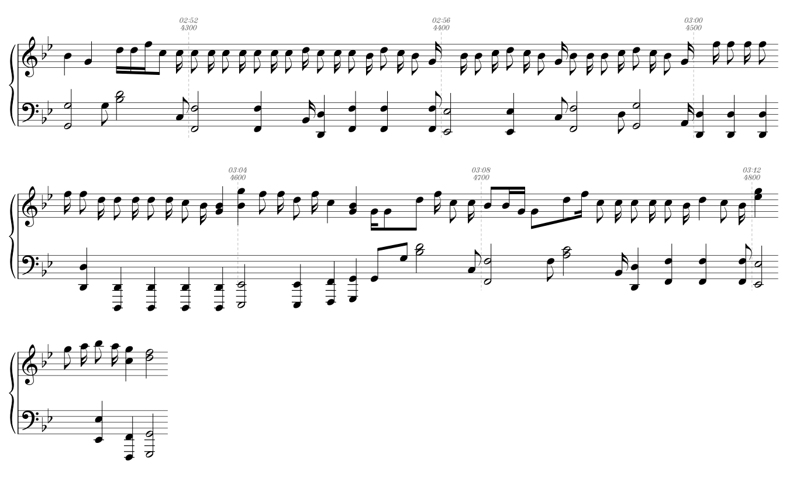
The plan and the declared lines
S1 f4252-f4302 L=keep R=right medium 1 | simple left-hand figures S2 f4302-f4339 L=left medium 7 R=right medium 1 | octave bass S3 f4339-f4364 L=keep R=right medium 1 | simple bass figures S4 f4364-f4439 L=left medium 7 R=right medium 1 | return to octave bass S5 f4439-f4510 L=keep R=right medium 1 | simple left-hand figures S6 f4510-f4552 L=left medium 7 R=right medium 1 | simplify the bass S7 f4552-f4602 L=keep R=right medium 1 | repeated D octaves S8 f4602-f4639 L=left medium 7 R=right medium 1 | return to octave bass S9 f4639-f4764 L=keep R=right medium 1 | simple figures, including the repeated passage S10 f4764-f4839 L=left medium 7 R=right medium 1 | octave bass as before S11 f4839-f4853 L=keep R=right medium 1 | simple bass octaves S12 f4853-f4872 L=left medium 7 R=right medium 1 | provisional continuation; no summary supplied pattern L f4252-f4302: keep pattern R f4252-f4302: right medium 1 pattern L f4302-f4339: left medium 7 pattern R f4302-f4339: right medium 1 pattern L f4339-f4364: keep pattern R f4339-f4364: right medium 1 pattern L f4364-f4439: left medium 7 pattern R f4364-f4439: right medium 1 pattern L f4439-f4510: keep pattern R f4439-f4510: right medium 1 pattern L f4510-f4552: left medium 7 pattern R f4510-f4552: right medium 1 pattern L f4552-f4602: keep pattern R f4552-f4602: right medium 1 pattern L f4602-f4639: left medium 7 pattern R f4602-f4639: right medium 1 pattern L f4639-f4764: keep pattern R f4639-f4764: right medium 1 pattern L f4764-f4839: left medium 7 pattern R f4764-f4839: right medium 1 pattern L f4839-f4853: keep pattern R f4839-f4853: right medium 1 pattern L f4853-f4872: keep pattern R f4853-f4872: right medium 1
GPT-6.1 Sol (medium)
The octava run becomes negras, but the first line puts triads on semicorcheas where the sheet now has a low note then a chord, so that stretch becomes harder than now.
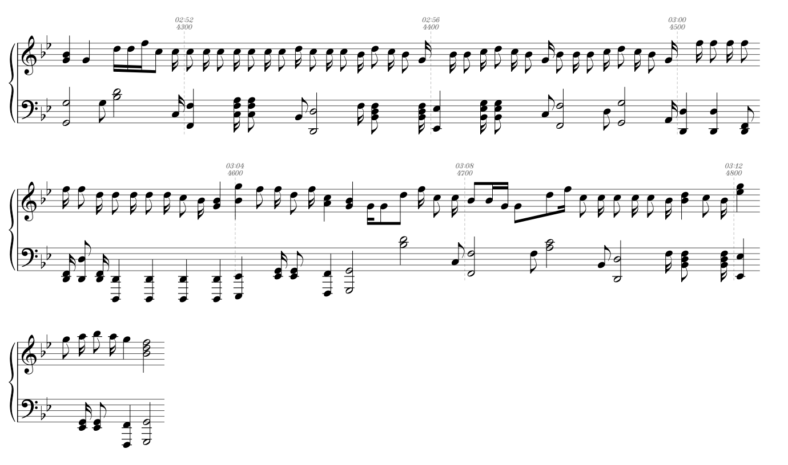
The plan and the declared lines
S1 f4252-f4302 L=keep R=right medium 1 | Preserve the simple bass and small chords; keep the melody clear. S2 f4302-f4339 L=left medium 15 R=right medium 1 | Reduce the fuller accompaniment to bass and two short chords. S3 f4339-f4364 L=keep R=right medium 1 | Preserve the simple bass figures. S4 f4364-f4439 L=left medium 15 R=right medium 1 | Continue the same bass-and-chords shape. S5 f4439-f4510 L=keep R=right medium 1 | Keep the existing compact accompaniment. S6 f4510-f4552 L=left medium 15 R=right medium 1 | Thin the dense passage; fast melody notes stay single. S7 f4552-f4602 L=keep R=right medium 1 | Preserve the repeated D bass octaves. S8 f4602-f4639 L=left medium 15 R=right medium 1 | Return to the established accompaniment, omitting rapid fills. S9 f4639-f4764 L=keep R=right medium 1 | Preserve the consecutive simple figures through the returning passage. S10 f4764-f4839 L=left medium 15 R=right medium 1 | Match the earlier passage with the same bass-and-chords shape. S11 f4839-f4853 L=keep R=right medium 1 | Preserve the closing F and G bass octaves. S12 f4853-f4872 L=left medium 15 R=right medium 1 | Shorten the established pattern for the ending; add no extra attacks. pattern L f4252-f4302: keep pattern L f4302-f4339: left medium 15 pattern L f4339-f4364: keep pattern L f4364-f4439: left medium 15 pattern L f4439-f4510: keep pattern L f4510-f4552: left medium 15 pattern L f4552-f4602: keep pattern L f4602-f4639: left medium 15 pattern L f4639-f4764: keep pattern L f4764-f4839: left medium 15 pattern L f4839-f4853: keep pattern L f4853-f4872: left medium 15 pattern R f4252-f4872: right medium 1
7 Years, f4252-f4872: hard-medium
The full prompts: the instructions (system prompt) · the plan request · the first batch (Sonnet's; each model's batch carries its own plan)
The passage now

Sonnet 5.5 (high)
The melody with dyads that add to it (hard), and the left hand as now where it is simple, with the run of low octavas made negras.
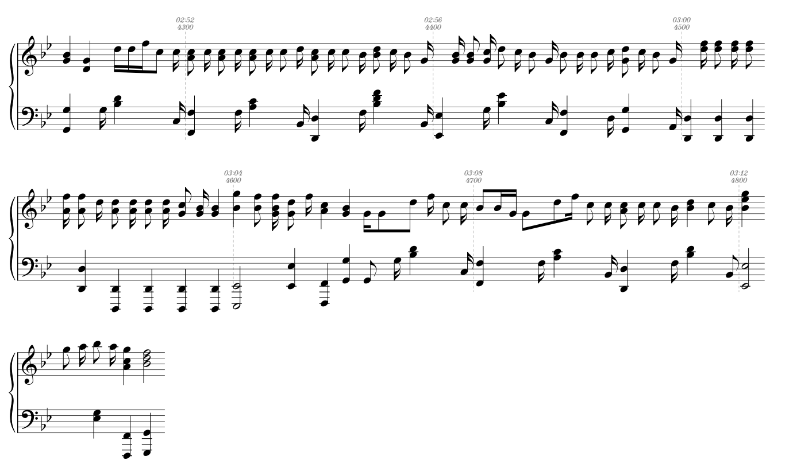
The plan and the declared lines
S1 f4252-f4510 L=left medium 15 R=right hard 1 | the verse: the left hand plays an octava on the chord, then two corcheas of the chord; the right hand carries the melody with small pieces of chords S2 f4510-f4664 L=left medium 7 R=right hard 1 | the busy passage, with long low octavas in the left hand: octavas in negras keep the bass strong and the hand in one shape, and the right hand keeps the melody with two-note pieces of chords S3 f4664-f4872 L=left medium 15 R=right hard 1 | the verse comes again (it sounds like f4281-f4453), so it takes the patterns of S1, up to the end of the song pattern L f4252-f4510: left medium 15 pattern L f4510-f4664: left medium 7 pattern L f4664-f4872: left medium 15 pattern L f4252-f4277: keep pattern L f4277-f4289: keep pattern L f4289-f4302: keep pattern L f4339-f4352: keep pattern L f4352-f4364: keep pattern L f4439-f4452: keep pattern L f4452-f4477: keep pattern L f4477-f4489: keep pattern L f4489-f4502: keep pattern L f4552-f4602: keep pattern L f4639-f4652: keep pattern L f4677-f4689: keep pattern L f4689-f4702: keep pattern L f4702-f4714: keep pattern L f4714-f4727: keep pattern L f4727-f4739: keep pattern L f4739-f4752: keep pattern L f4752-f4764: keep pattern L f4839-f4852: keep pattern L f4852-f4872: keep pattern R f4252-f4510: right hard 1 pattern R f4510-f4664: right hard 1 pattern R f4664-f4872: right hard 1
GPT-6 Luna (medium)
The check refused all three replies, so the user keeps the sheet now, with its fast run of low octavas at f4520-f4590.

The plan and the declared lines
S1 f4252-f4872 L=keep R=right hard 1 | Keep the simple left-hand stretches and use one consistent melody-and-chord pattern throughout. pattern L f4252-f4872: keep pattern R f4252-f4872: right hard 1
GPT-6.1 Terra (medium)
Accepted at the first reply: the melody with small chords at the phrase ends, the octava run in negras, and a left hand that stays near its rhythm now.
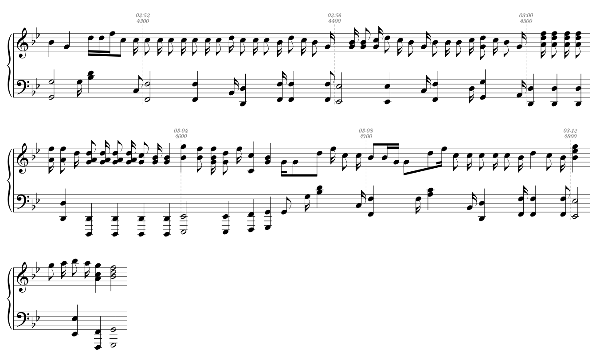
The plan and the declared lines
S1 f4252-f4302 L=keep R=right hard 1 | Simple left-hand figures; melody with light harmony. S2 f4302-f4339 L=left medium 7 R=right hard 1 | Simplify the bass to octave figures. S3 f4339-f4364 L=keep R=right hard 1 | Keep the simple bass figures. S4 f4364-f4439 L=left medium 7 R=right hard 1 | Continue the octave-bass pattern. S5 f4439-f4510 L=keep R=right hard 1 | Keep the simple chords and bass notes. S6 f4510-f4552 L=left medium 7 R=right hard 1 | Simplify the wider bass movement. S7 f4552-f4602 L=keep R=right hard 1 | Keep the repeated D octaves. S8 f4602-f4639 L=left medium 7 R=right hard 1 | Return to octave bass. S9 f4639-f4764 L=keep R=right hard 1 | Preserve the simple figures in the returning passage. S10 f4764-f4839 L=left medium 7 R=right hard 1 | Use the same simplified bass pattern. S11 f4839-f4853 L=keep R=right hard 1 | Keep the F and G octaves. S12 f4853-f4872 L=left medium 7 R=right hard 1 | Continue the octave-bass pattern to the end. pattern L f4252-f4301: keep pattern R f4252-f4301: right hard 1 pattern L f4302-f4338: left medium 7 pattern R f4302-f4338: right hard 1 pattern L f4339-f4363: keep pattern R f4339-f4363: right hard 1 pattern L f4364-f4438: left medium 7 pattern R f4364-f4438: right hard 1 pattern L f4439-f4509: keep pattern R f4439-f4509: right hard 1 pattern L f4510-f4551: left medium 7 pattern R f4510-f4551: right hard 1 pattern L f4552-f4601: keep pattern R f4552-f4601: right hard 1 pattern L f4602-f4638: left medium 7 pattern R f4602-f4638: right hard 1 pattern L f4639-f4763: keep pattern R f4639-f4763: right hard 1 pattern L f4764-f4838: left medium 7 pattern R f4764-f4838: right hard 1 pattern L f4839-f4852: keep pattern R f4839-f4852: right hard 1 pattern L f4853-f4872: left medium 7 pattern R f4853-f4872: right hard 1
GPT-6.1 Sol (medium)
The right hand puts a dyad under almost every note, and the first line of the left hand adds triads on semicorcheas where the sheet now has a low note then a chord: harder than now there.
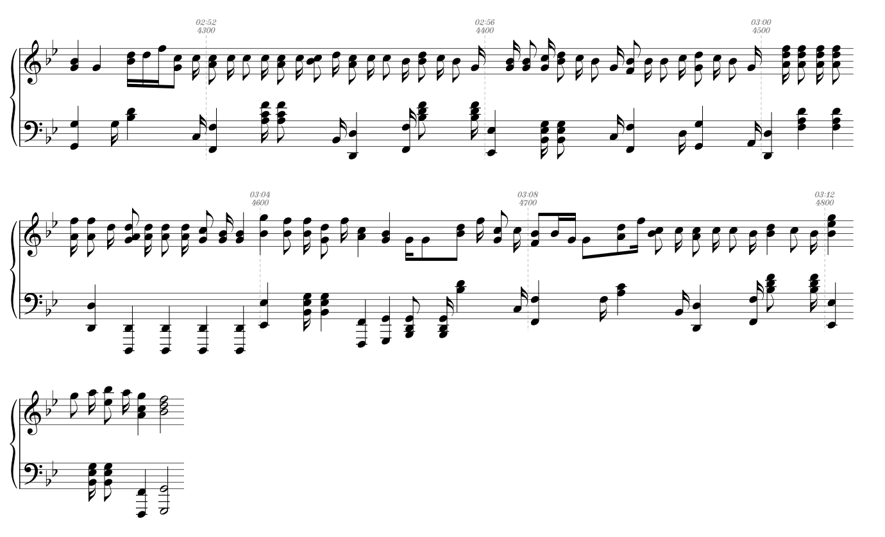
The plan and the declared lines
S1 f4252-f4872 L=left medium 15 R=right hard 1 | Closing refrain and ending: retain the bass-and-chord pulse, simplifying to an octave then two chord corcheas only where the original onsets support it; use keep in every listed simple left-hand span. Keep the melody prominent with small chord pieces beneath sustained notes; voice repeated passages alike. pattern L f4252-f4277: keep pattern L f4277-f4289: keep pattern L f4289-f4302: keep pattern L f4302-f4339: left medium 15 pattern L f4339-f4352: keep pattern L f4352-f4364: keep pattern L f4364-f4439: left medium 15 pattern L f4439-f4452: keep pattern L f4452-f4477: keep pattern L f4477-f4489: keep pattern L f4489-f4502: keep pattern L f4502-f4552: left medium 15 pattern L f4552-f4602: keep pattern L f4602-f4639: left medium 15 pattern L f4639-f4652: keep pattern L f4652-f4677: left medium 15 pattern L f4677-f4689: keep pattern L f4689-f4702: keep pattern L f4702-f4714: keep pattern L f4714-f4727: keep pattern L f4727-f4739: keep pattern L f4739-f4752: keep pattern L f4752-f4764: keep pattern L f4764-f4839: left medium 15 pattern L f4839-f4852: keep pattern L f4852-f4872: keep pattern R f4252-f4872: right hard 1
7 Years, f4252-f4872: forced-m15-m1
The full prompts: the instructions (system prompt) · the plan request · the first batch (Sonnet's; each model's batch carries its own plan)
The passage now

Sonnet 5.5 (high)
The octava run becomes negras, but the left hand stays the sheet now elsewhere (no octava then two beamed chords: medium 15 is hardly used), and the right hand changes a few notes of the melody near f4380.
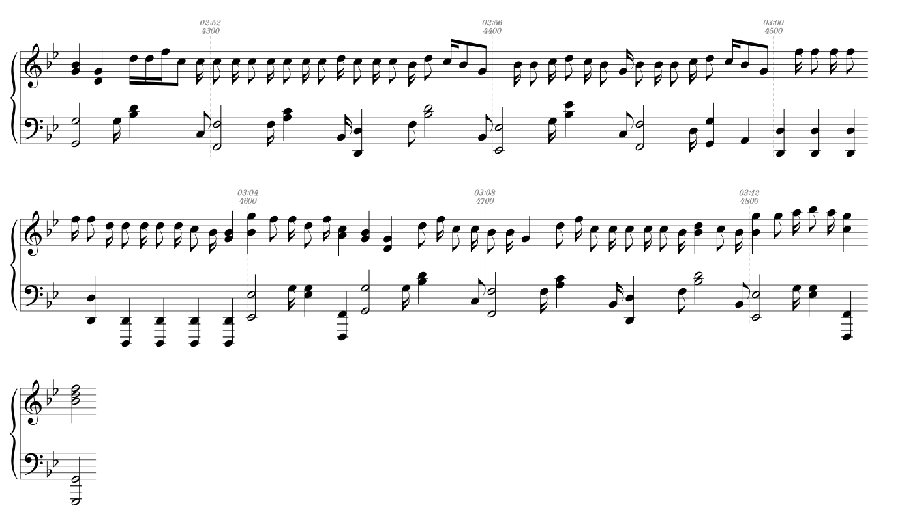
The plan and the declared lines
S1 f4252-f4510 L=left medium 15 R=right medium 1 | verse: the left hand plays an octava on the bass and then chords, so the octava and two beamed corcheas fit; the right hand has the melody alone with a second note on the long notes S2 f4510-f4664 L=left medium 15 R=right medium 1 | the busier stretch with bass octavas (D1+D2, F1+F2, G1+G2): the same octava and two corcheas pattern, and the right hand keeps the melody on top with a second note only on the long notes S3 f4664-f4872 L=left medium 15 R=right medium 1 | the verse comes back (it sounds like f4281-f4453), so it gets the same patterns as S1, through to the end pattern L f4252-f4302: keep pattern L f4302-f4339: left medium 15 pattern L f4339-f4364: keep pattern L f4364-f4439: left medium 15 pattern L f4439-f4502: keep pattern L f4502-f4552: left medium 15 pattern L f4552-f4602: keep pattern L f4602-f4639: left medium 15 pattern L f4639-f4652: keep pattern L f4652-f4677: left medium 15 pattern L f4677-f4764: keep pattern L f4764-f4839: left medium 15 pattern L f4839-f4872: keep pattern R f4252-f4872: right medium 1 not melody f4667 G4: the same G4 doubled by the transcription 3 frames after f4664, written as one note not melody f4717 G4: the same G4 doubled by the transcription 3 frames after f4714, written as one note
GPT-6 Luna (medium)
The check refused all three replies, so the user keeps the sheet now, run of low octavas included, and gets nothing of medium 15.

The plan and the declared lines
S1 f4252-f4872 L=keep R=right medium 1 | Keep the already-simple left-hand notes; use the same fluent melody pattern throughout, including the returning passage. pattern L f4252-f4872: keep pattern R f4252-f4872: right medium 1
GPT-6.1 Terra (medium)
The melody in single notes (medium 1) and an octava then a chord on most beats; the octava run becomes two held blancas, the simplest solution, but the two beamed chords of medium 15 rarely appear.
The plan and the declared lines
S1 f4252-f4510 L=left medium 15 R=right medium 1 | Octave-and-chord pattern; keep L at f4252-f4302, f4339-f4364 and f4439-f4510. S2 f4510-f4664 L=left medium 15 R=right medium 1 | Continue the patterns; keep L at f4552-f4602 and f4639-f4664. S3 f4664-f4872 L=left medium 15 R=right medium 1 | Repeat the earlier passage’s treatment; keep L at f4664-f4764 and f4839-f4853. Continue provisionally after f4853. pattern L f4252-f4302: keep pattern L f4302-f4339: left medium 15 pattern L f4339-f4364: keep pattern L f4364-f4439: left medium 15 pattern L f4439-f4502: keep pattern L f4502-f4510: left medium 15 pattern R f4252-f4510: right medium 1 pattern L f4510-f4552: left medium 15 pattern L f4552-f4602: keep pattern L f4602-f4639: left medium 15 pattern L f4639-f4664: keep pattern R f4510-f4664: right medium 1 pattern L f4664-f4764: keep pattern L f4764-f4839: left medium 15 pattern L f4839-f4872: keep pattern R f4664-f4872: right medium 1
GPT-6.1 Sol (medium)
A low note or octava then chords, close to medium 15, accepted at the first reply; some triads fall on semicorcheas, so the hand is busier than the pattern asks.
The plan and the declared lines
S1 f4252-f4302 L=keep R=right medium 1 | Preserve the simple bass and small chords. S2 f4302-f4339 L=left medium 15 R=right medium 1 | Simplify to bass then chord responses, retaining original onsets. S3 f4339-f4364 L=keep R=right medium 1 | Preserve the simple bass figures. S4 f4364-f4439 L=left medium 15 R=right medium 1 | Continue the same bass-and-chord shape. S5 f4439-f4510 L=keep R=right medium 1 | Keep the existing compact accompaniment. S6 f4510-f4552 L=left medium 15 R=right medium 1 | Thin the fuller passage; keep fast melody notes single. S7 f4552-f4602 L=keep R=right medium 1 | Preserve the repeated bass octaves. S8 f4602-f4639 L=left medium 15 R=right medium 1 | Resume the same simplified chord responses. S9 f4639-f4764 L=keep R=right medium 1 | Preserve the simple bass figures and returning small chords. S10 f4764-f4839 L=left medium 15 R=right medium 1 | Match the earlier returning passage and its accompaniment shape. S11 f4839-f4853 L=keep R=right medium 1 | Preserve the closing bass octaves. S12 f4853-f4872 L=left medium 15 R=right medium 1 | Continue the closing shape only where target onsets support it. pattern L f4252-f4302: keep pattern L f4302-f4339: left medium 15 pattern L f4339-f4364: keep pattern L f4364-f4439: left medium 15 pattern L f4439-f4510: keep pattern L f4510-f4552: left medium 15 pattern L f4552-f4602: keep pattern L f4602-f4639: left medium 15 pattern L f4639-f4764: keep pattern L f4764-f4839: left medium 15 pattern L f4839-f4872: keep pattern R f4252-f4872: right medium 1
Halleluyah (Pinchivi), f3462-f4003: easy
The full prompts: the instructions (system prompt) · the plan request · the first batch (Sonnet's; each model's batch carries its own plan)
The passage now

Sonnet 5.5 (high)
A regular low note then a triad all through, but the end of the melody is changed (C5 then F5 instead of the high E, G, A).
The plan and the declared lines
S1 f3462-f3843 L=left easy 2 R=right easy 2 | the verse and its turn (G C F G7 Am, then F G E E7 Am): the left hand plays a low bass note and then one triad on each chord. The right hand plays the melody as single notes in steady corcheas S2 f3843-f4003 L=left easy 1 R=right easy 1 | the calm ending on C and F: one held triad on each chord under a slow melody of long single notes. The very high notes are artifacts or accompaniment, so they are declared or moved pattern L f3462-f3482: keep pattern L f3482-f3535: left easy 2 pattern L f3535-f3552: keep pattern L f3552-f3586: keep pattern L f3586-f3635: keep pattern L f3635-f3788: left easy 2 pattern L f3788-f3825: keep pattern L f3825-f3843: left easy 2 pattern L f3843-f3895: left easy 1 pattern L f3895-f3927: keep pattern L f3927-f4003: keep pattern R f3462-f3843: right easy 2 pattern R f3843-f4003: right easy 1 not melody f3578 F4: the top of an accompaniment chord (G3,D4,F4) between two notes of the melody not melody f3607 C5: the same C5 repeated 3 frames before the C5 at f3610, which is kept artifact f3895 E6: a high note alone, more than an octava above the melody artifact f3918 G6: a high note alone, far above the melody artifact f3927 A6: the top of a high chord alone, far above the melody artifact f3928 A6: the top of a high chord alone, far above the melody artifact f3957 A6: a high note alone, far above the melody
GPT-6 Luna (medium)
The melody in single notes, but the left hand keeps the broken lines in corcheas of the sheet now in two places (f3540, f3800) and the final high notes of the melody are reduced to one F5.
The plan and the declared lines
S1 f3462-f3482 L=keep R=right easy 2 | opening phrase; retain the simple left-hand notes S2 f3482-f3535 L=left easy 1 R=right easy 2 | continue the same active melody with a held chord S3 f3535-f3618 L=keep R=right easy 2 | retain the simple left-hand notes through the chord changes S4 f3618-f3635 L=keep R=right easy 2 | retain the simple left-hand notes S5 f3635-f3788 L=left easy 2 R=right easy 2 | fuller passage; use the low-note-then-chord pattern S6 f3788-f3843 L=keep R=right easy 2 | retain the simple left-hand notes S7 f3843-f3895 L=left easy 1 R=right easy 1 | calmer C-to-F passage S8 f3895-f3958 L=keep R=right easy 1 | retain the simple left-hand notes S9 f3958-f4003 L=left easy 1 R=right easy 1 | finish calmly with the held-chord pattern pattern L f3462-f3482: keep pattern L f3482-f3535: left easy 1 pattern L f3535-f3635: keep pattern L f3635-f3788: left easy 2 pattern L f3788-f3843: keep pattern L f3843-f3895: left easy 1 pattern L f3895-f3958: keep pattern L f3958-f4003: left easy 1 pattern R f3462-f3482: right easy 2 pattern R f3482-f3535: right easy 2 pattern R f3535-f3618: right easy 2 pattern R f3618-f3635: right easy 2 pattern R f3635-f3788: right easy 2 pattern R f3788-f3843: right easy 2 pattern R f3843-f3895: right easy 1 pattern R f3895-f3958: right easy 1 pattern R f3958-f4003: right easy 1 artifact f3895 E6: a very high note alone, far above the melody artifact f3918 G6: a very high note alone, far above the melody artifact f3927 A5: a very high chord above the melody artifact f3927 C6: a very high chord above the melody artifact f3927 F6: a very high chord above the melody artifact f3927 A6: a very high chord above the melody artifact f3928 F6: a very high chord above the melody artifact f3928 A6: a very high chord above the melody artifact f3957 A6: a very high note alone, far above the melody
GPT-6.1 Terra (medium)
The melody in single notes with its high ending kept; after a short broken line the left hand holds one triad per chord (0.16 moves per negra), the calmest version.
The plan and the declared lines
S1 f3462-f3482 L=keep R=right easy 2 | Keep the simple left-hand figure; single-note melody S2 f3482-f3535 L=left easy 1 R=right easy 2 | Held chords under the melody S3 f3535-f3635 L=keep R=right easy 2 | Keep the simple left-hand figures S4 f3635-f3788 L=left easy 1 R=right easy 2 | Held chords with minimal movement S5 f3788-f3843 L=keep R=right easy 2 | Keep the simple left-hand figures S6 f3843-f3895 L=left easy 1 R=right easy 1 | Held chords and slower melody S7 f3895-f3958 L=keep R=right easy 1 | Keep the simple left-hand figures S8 f3958-f4003 L=left easy 1 R=right easy 1 | Continue provisionally; no summary data for this interval pattern L f3462-f3481: keep pattern R f3462-f3481: right easy 2 pattern L f3482-f3534: left easy 1 pattern R f3482-f3534: right easy 2 pattern L f3535-f3634: keep pattern R f3535-f3634: right easy 2 pattern L f3635-f3787: left easy 1 pattern R f3635-f3787: right easy 2 pattern L f3788-f3842: keep pattern R f3788-f3842: right easy 2 pattern L f3843-f3894: left easy 1 pattern R f3843-f3894: right easy 1 pattern L f3895-f4003: keep pattern R f3895-f4003: right easy 1 not melody f3928 A6: doubled onset one frame after the same note
GPT-6.1 Sol (medium)
Close to B: held triads after a low note, but a beamed line of corcheas at the start and an arpeggio before the end.
The plan and the declared lines
S1 f3462-f3482 L=keep R=right easy 2 | Preserve the simple opening fifth; melody in single notes. S2 f3482-f3535 L=left easy 2 R=right easy 2 | Reduce the moving accompaniment to bass then a held chord. S3 f3535-f3635 L=keep R=right easy 2 | Keep the simple accompaniment through the chord changes. S4 f3635-f3788 L=left easy 2 R=right easy 2 | Bass then a close-position chord; retain the main accompaniment onsets. S5 f3788-f3843 L=keep R=right easy 2 | Preserve the simple A-minor accompaniment. S6 f3843-f3895 L=left easy 1 R=right easy 1 | Calm closing passage with held harmony and single melody notes. S7 f3895-f4003 L=keep R=right easy 1 | Preserve the sparse ending and let the final notes ring. pattern L f3462-f3481: keep pattern R f3462-f3481: right easy 2 pattern L f3482-f3534: left easy 2 pattern R f3482-f3534: right easy 2 pattern L f3535-f3634: keep pattern R f3535-f3634: right easy 2 pattern L f3635-f3787: left easy 2 pattern R f3635-f3787: right easy 2 pattern L f3788-f3842: keep pattern R f3788-f3842: right easy 2 pattern L f3843-f3894: left easy 1 pattern R f3843-f3894: right easy 1 pattern L f3895-f4003: keep pattern R f3895-f4003: right easy 1 not melody f3607 C5: a duplicate reattack immediately before the same melody note at f3610 not melody f3928 A6: a duplicate attack of the melody note already sounding from f3927
Halleluyah (Pinchivi), f3462-f4003: medium
The full prompts: the instructions (system prompt) · the plan request · the first batch (Sonnet's; each model's batch carries its own plan)
The passage now

Sonnet 5.5 (high)
The same steady low note then two chords, but the end of the melody (the high E, G and A) becomes one held F5.
The plan and the declared lines
S1 f3462-f3843 L=left medium 2 R=right medium 1 | the verse and its turn (G C F G7 Am, then F G E E7 Am): one waltz left hand (low note, then the chord twice) under a melody that takes a second note only on the long notes; the short left-hand stretches (a held fifth) take the same waltz rhythm S2 f3843-f4003 L=left medium 2 R=right medium 14 | the close (C F): the same waltz left hand, and the right hand lands on a three-note chord at the end of the phrase; the very high right-hand notes are probably artifacts pattern L f3462-f3482: keep pattern L f3482-f3535: left medium 2 pattern L f3535-f3552: keep pattern L f3552-f3586: keep pattern L f3586-f3635: keep pattern L f3635-f3788: left medium 2 pattern L f3788-f3825: keep pattern L f3825-f3895: left medium 2 pattern L f3895-f3927: keep pattern L f3927-f4003: keep pattern R f3462-f3843: right medium 1 pattern R f3843-f4003: right medium 14 artifact f3895 E6: a high note alone, more than an octava above the melody (C5) around it artifact f3918 G6: a high note alone, two octavas above the melody artifact f3927 A6: the top of a very high chord alone, far above the melody artifact f3928 A6: the same very high chord, held again artifact f3957 A6: a very high note alone, far above the melody
GPT-6 Luna (medium)
Good small dyads in the right hand, but the left hand keeps the long broken lines in corcheas of the sheet now (f3640-f3780) and moves more than now (0.59 against 0.36 per negra); the high ending is reduced to one F5.
The plan and the declared lines
S1 f3462-f3482 L=keep R=right medium 1 | keep the simple repeated left-hand stretch; use a fluent melody with a second note only on longer notes S2 f3482-f3535 L=left medium 15 R=right medium 1 | use the bass-then-two-chords rhythm where the left hand is not marked simple S3 f3535-f3618 L=keep R=right medium 1 | return to the marked simple left-hand stretches S4 f3618-f3635 L=keep R=right medium 1 | keep the simple left-hand stretch at the start of this passage S5 f3635-f3788 L=left medium 10 R=right medium 1 | use the flowing broken-chord pattern for the more active left hand S6 f3788-f3843 L=keep R=right medium 1 | keep the marked simple left-hand stretches S7 f3843-f3895 L=left medium 15 R=right medium 1 | use the bass-then-two-chords rhythm under the C-to-F passage S8 f3895-f3958 L=keep R=right medium 1 | keep the marked simple left-hand stretches S9 f3958-f4003 L=left medium 15 R=right medium 1 | continue the established left-hand pattern; keep the right hand fluent pattern L f3462-f3482: keep pattern L f3482-f3535: left medium 15 pattern L f3535-f3635: keep pattern L f3635-f3788: left medium 10 pattern L f3788-f3843: keep pattern L f3843-f3895: left medium 15 pattern L f3895-f3958: keep pattern L f3958-f4003: keep pattern R f3462-f4003: right medium 1 not melody f3607 C5: repeated accompaniment note immediately before the held melody note artifact f3895 E6: a high note alone, far above the melody artifact f3918 G6: a high note alone, far above the melody artifact f3927 A6: part of a very high chord that adds nothing to the melody artifact f3928 F6: part of a very high chord that adds nothing to the melody artifact f3928 A6: part of a very high chord that adds nothing to the melody artifact f3957 A6: a very high note alone, far above the melody
GPT-6.1 Terra (medium)
Like B: a low note then two chords, regular, the melody with dyads and its high ending kept, accepted at the second reply.
The plan and the declared lines
S1 f3462-f3482 L=keep R=right medium 1 | keep the simple fifth S2 f3482-f3535 L=left medium 2 R=right medium 1 | low note and repeated chords S3 f3535-f3635 L=keep R=right medium 1 | keep the simple left-hand shapes S4 f3635-f3788 L=left medium 2 R=right medium 1 | return to the low-note and chord pattern S5 f3788-f3843 L=keep R=right medium 1 | keep the simple left-hand shapes S6 f3843-f3895 L=left medium 2 R=right medium 1 | continue the chord pattern S7 f3895-f3958 L=keep R=right medium 1 | keep the simple left-hand notes S8 f3958-f4003 L=left medium 2 R=right medium 1 | provisional continuation; no summary is given for this range pattern L f3462-f3482: keep pattern R f3462-f3482: right medium 1 pattern L f3482-f3535: left medium 2 pattern R f3482-f3535: right medium 1 pattern L f3535-f3635: keep pattern R f3535-f3635: right medium 1 pattern L f3635-f3788: left medium 2 pattern R f3635-f3788: right medium 1 pattern L f3788-f3843: keep pattern R f3788-f3843: right medium 1 pattern L f3843-f3895: left medium 2 pattern R f3843-f3895: right medium 1 pattern L f3895-f4003: keep pattern R f3895-f3958: right medium 1 pattern R f3958-f4003: right medium 1 not melody f3607 C5: repeated immediately before the same melody note not melody f3927 A6: doubled by the immediately following A6
GPT-6.1 Sol (medium)
The melody with small dyads and its high ending; the left hand plays a low note then two chords (medium 2) through the passage, as a waltz.
The plan and the declared lines
S1 f3462-f3482 L=keep R=right medium 1 | Preserve the simple fifth; keep the melody clear. S2 f3482-f3535 L=left medium 2 R=right medium 1 | Sparse bass and repeated chords, following the existing onsets. S3 f3535-f3635 L=keep R=right medium 1 | Preserve the marked simple accompaniment through the chord changes. S4 f3635-f3788 L=left medium 2 R=right medium 1 | Return to the same bass-and-chord shape; shorten it where necessary. S5 f3788-f3843 L=keep R=right medium 1 | Preserve the simple Am figures. S6 f3843-f3895 L=left medium 2 R=right medium 14 | Closing phrase: simplify the accompaniment and expose any melody in its top notes. S7 f3895-f3958 L=keep R=right medium 14 | Preserve the simple ending figures; omit isolated high artifacts. S8 f3958-f4003 L=left medium 2 R=right medium 14 | Continue the closing texture, cutting the pattern to the remaining onsets. pattern L f3462-f3481: keep pattern L f3482-f3534: left medium 2 pattern L f3535-f3634: keep pattern L f3635-f3787: left medium 2 pattern L f3788-f3842: keep pattern L f3843-f3894: left medium 2 pattern L f3895-f4003: keep pattern R f3462-f3842: right medium 1 pattern R f3843-f4003: right medium 14 not melody f3610 C5: a duplicate reattack merged into the preceding C5 to avoid two onsets closer than a semicorchea not melody f3928 A6: a duplicate of the immediately preceding phrase-ending A6, merged into its held chord
Halleluyah (Pinchivi), f3462-f4003: hard-medium
The full prompts: the instructions (system prompt) · the plan request · the first batch (Sonnet's; each model's batch carries its own plan)
The passage now

Sonnet 5.5 (high)
The right hand keeps its dyads (hard 1) and the left hand plays calm low notes and chords in negras (0.39 moves per negra), but the high ending of the melody becomes a held A4-E5 and F5.
The plan and the declared lines
S1 f3462-f3843 L=left medium 2 R=right hard 1 | the end of the verse: the left hand plays a bass note with chords after it (G C F G7 Am, then F G E E7 Am), so the waltz pattern is nearest. The right hand keeps the melody with small two-note pieces of the chords. The short held stretches of the left hand (D3+G3, F2+C3, A2+E3) are written as the waltz bass and chords. S2 f3843-f4003 L=left medium 2 R=right hard 1 | the ending on C and F: the same patterns as before, so the pianist keeps the same hand shapes. The high chord of the right hand (A5-A6) is an artifact, and the music is in the top notes of the left-hand chords (C5, F4+C5+F5), which move to the right hand. pattern L f3462-f3482: keep pattern L f3482-f3535: left medium 2 pattern L f3535-f3635: keep pattern L f3635-f3788: left medium 2 pattern L f3788-f3825: keep pattern L f3825-f3895: left medium 2 pattern L f3895-f4003: keep pattern R f3462-f4003: right hard 1 not melody f3607 C5: the same chord struck again by the transcription, a note doubled just before the next one artifact f3895 E6: a high note alone, more than two octavas above the melody, the music here is the top note of the left-hand chord (C5), now in the right hand artifact f3918 G6: a high note alone, far above the melody artifact f3927 A5: a high chord alone, far above the melody; the top note of the left-hand chord (F5) moves to the right hand artifact f3927 C6: a high chord alone, far above the melody; the top note of the left-hand chord (F5) moves to the right hand artifact f3927 F6: a high chord alone, far above the melody; the top note of the left-hand chord (F5) moves to the right hand artifact f3927 A6: a high chord alone, far above the melody; the top note of the left-hand chord (F5) moves to the right hand artifact f3928 F6: a high chord alone, far above the melody artifact f3928 A6: a high chord alone, far above the melody artifact f3957 A6: a high note alone, far above the melody
GPT-6 Luna (medium)
A regular left hand (a low note then two chords) under the dyads of the right hand, but the high ending of the melody is reduced to one F5.
The plan and the declared lines
S1 f3462-f3482 L=keep R=right hard 1 | simple held bass and fifth S2 f3482-f3535 L=left medium 2 R=right hard 1 | bass followed by chord notes S3 f3535-f3618 L=keep R=right hard 1 | simple repeated chord shapes S4 f3618-f3635 L=keep R=right hard 1 | simple held notes S5 f3635-f3788 L=left medium 15 R=right hard 1 | fuller chord accompaniment S6 f3788-f3843 L=keep R=right hard 1 | simple held chord shapes S7 f3843-f3895 L=left medium 2 R=right hard 1 | bass followed by chord notes S8 f3895-f3958 L=keep R=right hard 1 | simple held notes and chord S9 f3958-f4003 L=left medium 2 R=right hard 1 | continue the final section's accompaniment pattern L f3462-f3482: keep pattern L f3482-f3535: left medium 2 pattern L f3535-f3552: keep pattern L f3552-f3586: keep pattern L f3586-f3635: keep pattern L f3635-f3788: left medium 15 pattern L f3788-f3843: keep pattern L f3843-f3895: left medium 2 pattern L f3895-f3958: keep pattern L f3958-f4003: keep pattern R f3462-f3482: right hard 1 pattern R f3482-f3535: right hard 1 pattern R f3535-f3618: right hard 1 pattern R f3618-f3635: right hard 1 pattern R f3635-f3788: right hard 1 pattern R f3788-f3843: right hard 1 pattern R f3843-f3895: right hard 1 pattern R f3895-f3958: right hard 1 pattern R f3958-f4003: right hard 1 artifact f3895 E6: a high note alone, more than an octave above the melody artifact f3918 G6: a high note alone, more than an octave above the melody artifact f3927 A6: the top of a high chord, far above the melody artifact f3928 A6: a high note alone, far above the melody artifact f3957 A6: a high note alone, far above the melody
GPT-6.1 Terra (medium)
The right hand and the ending are kept, but the left hand repeats triads on every corchea (four in a row at f3680 and f3740) and moves more than now (0.62 against 0.36 per negra).
The plan and the declared lines
S1 f3462-f3482 L=keep R=right hard 1 | Keep the simple left-hand shape; melody with small chord pieces. S2 f3482-f3535 L=left medium 15 R=right hard 1 | Octave bass and paired chords; preserve the existing rhythm. S3 f3535-f3635 L=keep R=right hard 1 | Keep the consecutive simple left-hand stretches. S4 f3635-f3788 L=left medium 15 R=right hard 1 | Return to the octave-and-chords pattern, simplified to the original onsets. S5 f3788-f3843 L=keep R=right hard 1 | Keep the simple left-hand shapes. S6 f3843-f3895 L=left medium 15 R=right hard 1 | Use the same companion pattern, shortened to fit the original rhythm. S7 f3895-f3958 L=keep R=right hard 1 | Keep the simple left-hand stretches. S8 f3958-f4003 L=left medium 15 R=right hard 1 | Provisional continuation: no summary was provided for these frames. pattern L f3462-f3482: keep pattern L f3482-f3535: left medium 15 pattern L f3535-f3635: keep pattern L f3635-f3788: left medium 15 pattern L f3788-f3843: keep pattern L f3843-f3895: left medium 15 pattern L f3895-f4003: keep pattern R f3462-f4003: right hard 1 not melody f3927 A6: doubled by the same note one frame later
GPT-6.1 Sol (medium)
The dyads of the right hand and the high ending kept; the left hand plays a low note then two chords in corcheas (medium 2), regular, after a short broken line at the start.
The plan and the declared lines
S1 f3462-f3482 L=keep R=right hard 1 | Opening: retain the simple left-hand fifth and clear melody. S2 f3482-f3535 L=left medium 15 R=right hard 1 | Moving accompaniment: bass then chord responses, omitting extra attacks. S3 f3535-f3635 L=keep R=right hard 1 | Retain the simple chord shapes through the harmonic changes. S4 f3635-f3788 L=left medium 15 R=right hard 1 | Fuller phrase: repeat the bass-and-chord shape, shortened to existing onsets. S5 f3788-f3843 L=keep R=right hard 1 | Cadence: preserve the sparse left-hand notes. S6 f3843-f3895 L=left medium 15 R=right hard 1 | Closing phrase: retain the same accompaniment shape with fewer attacks. S7 f3895-f4003 L=keep R=right hard 1 | Ending: preserve the simple closing notes and let them sustain; add no attacks in the tail. pattern L f3462-f3481: keep pattern L f3482-f3534: left medium 15 pattern L f3535-f3634: keep pattern L f3635-f3787: left medium 15 pattern L f3788-f3842: keep pattern L f3843-f3894: left medium 15 pattern L f3895-f4003: keep pattern R f3462-f4003: right hard 1 not melody f3607 C5: a duplicated attack immediately before the sustained melody C5 at f3610 not melody f3927 A6: a duplicated chord attack one frame before the sustained melody A6 at f3928
Halleluyah (Pinchivi), f3462-f4003: forced-e2-e2
The full prompts: the instructions (system prompt) · the plan request · the first batch (Sonnet's; each model's batch carries its own plan)
The passage now
Sonnet 5.5 (high)
The melody in single notes with its high ending; the left hand is a low note then a held triad (easy 2) through most of the passage, after one short broken line at the start.
The plan and the declared lines
S1 f3462-f3843 L=left easy 2 R=right easy 2 | the verse: chords change about every two negras, so one low note and then its triad in each chord, with the melody in single notes S2 f3843-f4003 L=left easy 2 R=right easy 2 | the ending: only C and F, so the same low note and triad, held longer, with the melody in single notes pattern L f3462-f3482: keep pattern L f3482-f3535: left easy 2 pattern L f3535-f3586: keep pattern L f3586-f3635: keep pattern L f3635-f3788: left easy 2 pattern L f3788-f3825: keep pattern L f3825-f3895: left easy 2 pattern L f3895-f3927: keep pattern L f3927-f4003: keep pattern R f3462-f4003: right easy 2 not melody f3578 F4: the top of the G7 accompaniment chord under the held B4, a fill (the left hand already plays that chord) not melody f3607 C5: a C5 repeated 3 frames before the next C5; the two are one note, kept at f3610 not melody f3928 A6: the same A as f3927 repeated one frame later; one note (written an octava lower, A5, at f3927)
GPT-6 Luna (medium)
The check refused all three replies, so the user keeps the sheet now (chords in the right hand, broken lines in the left).

The plan and the declared lines
S1 f3462-f3482 L=keep R=right easy 2 | keep the simple opening notes S2 f3482-f3535 L=left easy 2 R=right easy 2 | use the low-note-then-chord pattern S3 f3535-f3618 L=keep R=right easy 2 | keep the marked simple left-hand passage S4 f3618-f3635 L=keep R=right easy 2 | keep the marked simple left-hand passage S5 f3635-f3788 L=left easy 2 R=right easy 2 | use the low-note-then-chord pattern S6 f3788-f3843 L=keep R=right easy 2 | keep the marked simple left-hand passage S7 f3843-f3895 L=left easy 2 R=right easy 2 | use the low-note-then-chord pattern S8 f3895-f3958 L=keep R=right easy 2 | keep the marked simple left-hand passage S9 f3958-f4003 L=left easy 2 R=right easy 2 | continue the simple pattern to the end pattern L f3462-f3482: keep pattern R f3462-f3482: right easy 2 pattern L f3482-f3535: left easy 2 pattern R f3482-f3535: right easy 2 pattern L f3535-f3618: keep pattern R f3535-f3618: right easy 2 pattern L f3618-f3635: keep pattern R f3618-f3635: right easy 2 pattern L f3635-f3788: left easy 2 pattern R f3635-f3788: right easy 2 pattern L f3788-f3843: keep pattern R f3788-f3843: right easy 2 pattern L f3843-f3895: left easy 2 pattern R f3843-f3895: right easy 2 pattern L f3895-f3927: keep pattern R f3895-f3927: right easy 2 pattern L f3927-f4003: keep pattern R f3927-f4003: right easy 2 not melody f3482 G4: accompaniment chord while the melody rests not melody f3491 G4: accompaniment chord while the melody rests not melody f3500 G4: accompaniment chord while the melody rests not melody f3517 G4: accompaniment chord while the melody rests not melody f3526 G4: accompaniment chord while the melody rests artifact f3895 E6: a high note alone, far above the melody artifact f3918 G6: a high note alone, far above the melody artifact f3927 A6: a high note in a high chord, far above the melody artifact f3928 F6: a high chord alone, above the melody artifact f3928 A6: a high chord alone, above the melody artifact f3957 A6: a high note alone, far above the melody
GPT-6.1 Terra (medium)
Accepted at the first reply: the melody in single notes with its high ending, a low note then a held triad on each chord, one broken line at the start.
The plan and the declared lines
S1 f3462-f3482 L=keep R=right easy 2 | simple left-hand stretch S2 f3482-f3535 L=left easy 2 R=right easy 2 | bass then chord S3 f3535-f3635 L=keep R=right easy 2 | consecutive simple left-hand stretches S4 f3635-f3788 L=left easy 2 R=right easy 2 | bass then chord S5 f3788-f3843 L=keep R=right easy 2 | consecutive simple left-hand stretches S6 f3843-f3895 L=left easy 2 R=right easy 2 | bass then chord S7 f3895-f3958 L=keep R=right easy 2 | consecutive simple left-hand stretches S8 f3958-f4003 L=left easy 2 R=right easy 2 | provisional continuation; no summary supplied pattern L f3462-f3482: keep pattern R f3462-f3482: right easy 2 pattern L f3482-f3535: left easy 2 pattern R f3482-f3535: right easy 2 pattern L f3535-f3635: keep pattern R f3535-f3635: right easy 2 pattern L f3635-f3788: left easy 2 pattern R f3635-f3788: right easy 2 pattern L f3788-f3843: keep pattern R f3788-f3843: right easy 2 pattern L f3843-f3895: left easy 2 pattern R f3843-f3895: right easy 2 pattern L f3895-f4003: keep pattern R f3895-f3958: right easy 2 pattern R f3958-f4003: right easy 2 not melody f3610 C5: repeated transcription note immediately after C5 not melody f3928 A6: duplicate onset immediately after A6
GPT-6.1 Sol (medium)
Close to B, but the left hand keeps two broken lines in corcheas (f3540 and the arpeggio at f3790), which easy 2 does not have.
The plan and the declared lines
S1 f3462-f3482 L=keep R=right easy 2 | Keep the simple opening fifth; single-note melody. S2 f3482-f3535 L=left easy 2 R=right easy 2 | Reduce the accompaniment to bass then a close-position chord. S3 f3535-f3635 L=keep R=right easy 2 | Preserve the marked simple accompaniment and its main onsets. S4 f3635-f3788 L=left easy 2 R=right easy 2 | Bass then chord, using nearby inversions and fewer onsets. S5 f3788-f3843 L=keep R=right easy 2 | Keep the simple Am accompaniment beneath the melody. S6 f3843-f3895 L=left easy 2 R=right easy 2 | Continue the same bass-and-chord shape into the ending. S7 f3895-f3958 L=keep R=right easy 2 | Preserve the marked simple closing notes; remove right-hand doubling. S8 f3958-f4003 L=left easy 2 R=right easy 2 | Finish with the same accompaniment, shortened to the remaining music. pattern L f3462-f3482: keep pattern L f3482-f3535: left easy 2 pattern L f3535-f3635: keep pattern L f3635-f3788: left easy 2 pattern L f3788-f3843: keep pattern L f3843-f3895: left easy 2 pattern L f3895-f4003: keep pattern R f3462-f4003: right easy 2 not melody f3928 A6: duplicate attack of the sustained A6 already retained at f3927